Aparato cardiovascular, sangre y aparato urinario · martes 1 de diciembre. Solo lo que entra: 78 conceptos, 15 preguntas del test, 5 casos y 86 tarjetas.
ITU ascendente: uretritis → cistitis → pielonefritis.
Nefrítico: HTA, edema y hematuria · nefrótico: proteinuria y edemas.
Insuficiencia renal aguda (urgencia) y crónica (diabetes + HTA → diálisis o trasplante).
Diapositiva a diapositiva
Lo de la profe empieza tapado: dilo en voz alta y toca cada diapositiva para comprobar. Relee solo lo que falles.
1
El aparato cardiovascular y el corazón
Diapositivas 2 y 3 · imprescindible
Lo que dice la profe
Aparato cardiovascular: Corazón + sistema vascular + sangre
El corazón: Órgano que se contrae y se relaja alternativamente para impulsar la sangre por todo el organismo.
En mediastino, apoyado en el diafragma
Mediastino: El espacio del centro del tórax, entre los dos pulmones.
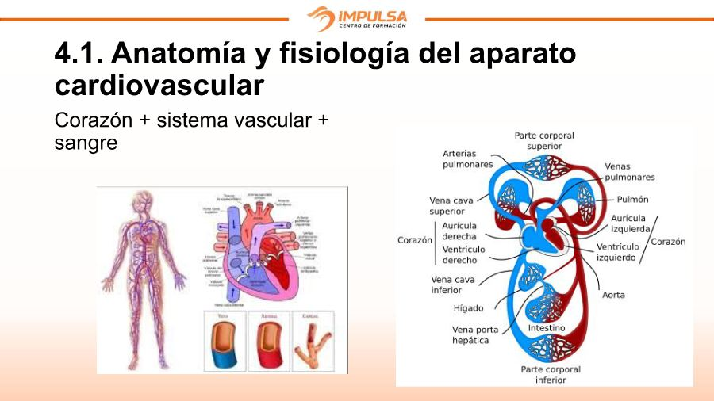
Corazón, vasos y circulación (diap. 2)
Entiéndelo: Tres piezas: una bomba (corazón), unas tuberías (vasos) y lo que circula por ellas (sangre).
Truco:C + V + S: Corazón, Vasos, Sangre.
Ponte a prueba: ¿Qué forma el aparato cardiovascular y dónde está el corazón?
2
La pared del corazón
Diapositiva 4 · imprescindible
Lo que dice la profe
Pericardio: membrana serosa, envuelve corazón. 2 capas con líquido lubricante entre ellas. Mantiene corazón en posición, evita que se llene demasiado de sangre, lo protege de infecciones.
Miocardio: músculo cardiaco. Fibras musculares + células de conducción eléctrica.
Endocardio: membrana que recubre las paredes internas del corazón
Membrana serosa: Membrana fina que envuelve un órgano y produce un líquido lubricante.
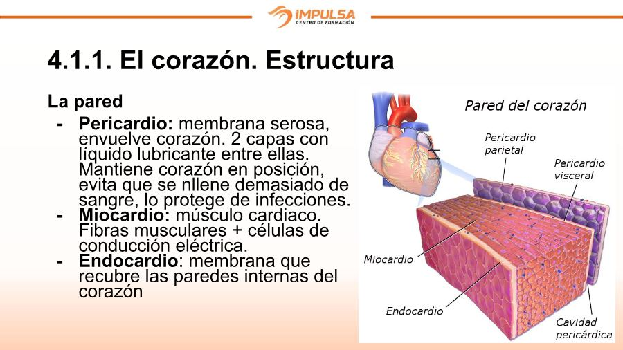
Pared del corazón: pericardio, miocardio y endocardio (diap. 4)
Entiéndelo: De fuera adentro: una bolsa (pericardio), el músculo (miocardio) y un forro interior (endocardio).
Ponte a prueba: ¿De dónde recibe sangre cada aurícula y hacia dónde la impulsa cada ventrículo?
4
Las válvulas
Diapositivas 6 y 7 · imprescindible
Lo que dice la profe
Válvulas en salida de aurículas y ventrículos
Lado derecho
Válvula tricúspide: AD/VD
Válvula pulmonar: salida VD
Lado izquierdo
Válvula mitral: AI/VI
Válvula aórtica: salida VI
Válvula: Una «puerta» que deja pasar la sangre en un solo sentido.
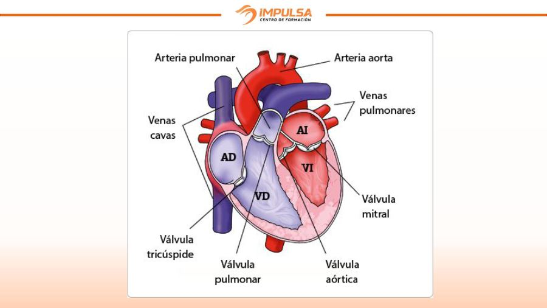
Cavidades y válvulas del corazón (diap. 7)
Entiéndelo: Entre aurícula y ventrículo: tricúspide (derecha) y mitral (izquierda). A la salida de cada ventrículo: pulmonar y aórtica.
Truco: «Tri a la derecha, Mitral a la izquierda»: las dos «i» van juntas.
Ponte a prueba: Di las 4 válvulas del corazón y dónde está cada una.
5
La irrigación del corazón
Diapositiva 8
Lo que dice la profe
Irrigación del corazón mediante arterias coronarias, nacen en la aorta y se ramifican. Venas coronarias recogen sangre desoxigenada y la llevan a la AD.
Arterias coronarias: Las arterias que dan sangre al propio músculo del corazón.
Entiéndelo: El corazón también necesita sangre para sí mismo: se la dan las coronarias, que salen de la aorta. Si se tapan, hay infarto.
Truco:Coronarias = corona alrededor del corazón.
Ponte a prueba: ¿Qué arterias irrigan el corazón, de dónde salen y adónde llevan la sangre las venas coronarias?
6
El ciclo cardiaco y la sangre por latido
Diapositiva 9 · imprescindible
Lo que dice la profe
Ciclo cardiaco: fenómenos físicos que suceden en las cavidades cardiacas y en los grandes vasos durante las fases de contracción y relajación del corazón.
Cantidad de sangre expulsada/latido depende de:
Contractilidad: fuerza del miocardio
Precarga: cantidad de sangre que recibe el corazón a través de venas cavas
Poscarga: resistencia a salir del VI
Frecuencia cardiaca: pulsaciones/minuto
Ciclo cardiaco: «Fenómenos físicos que suceden en las cavidades cardiacas y en los grandes vasos durante las fases de contracción y relajación del corazón.»
Precarga: La sangre que le llega al corazón.
Poscarga: Lo que le cuesta a la sangre salir del ventrículo izquierdo.
Entiéndelo: Cuánta sangre sale en cada latido depende de la fuerza, de cuánta entra, de lo que cuesta salir y de lo rápido que late.
Ponte a prueba: ¿Qué es el ciclo cardiaco y de qué 4 factores depende la sangre expulsada por latido?
7
Sístole y diástole
Diapositivas 10 y 11 · imprescindible
Lo que dice la profe
Fases del ciclo cardiaco
Sístole: contracción de ventrículos. Apertura válvulas pulmonar y aórtica. Cierre válvulas tricúspide y mitral
Diástole: Ventrículos casi vacíos, P se reduce→apertura válvulas tricúspide y mitral. Cierre pulmonar y aórtica. Ventrículos se relajan, aurículas se contraen→sangre pasa de aurículas a ventrículos
Sístole: Contracción de los ventrículos: el corazón bombea.
Diástole: Relajación: el corazón se llena.
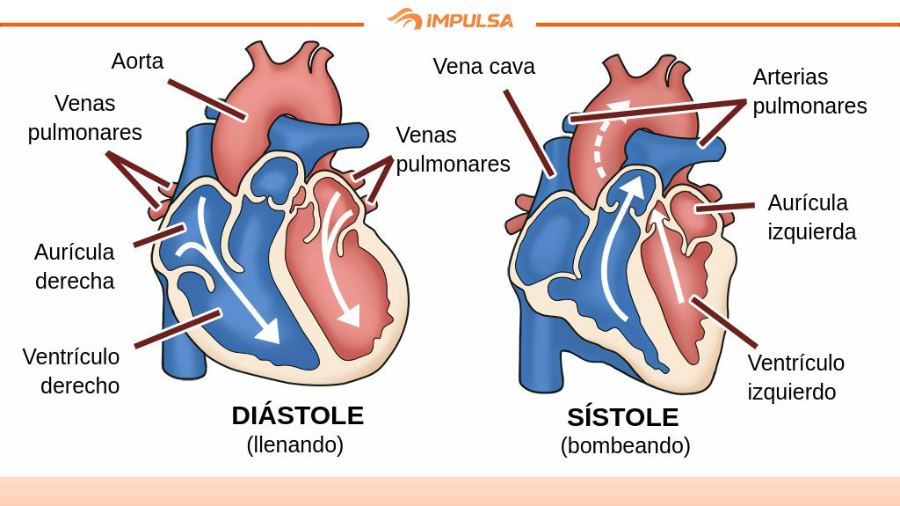
Diástole (llenando) y sístole (bombeando) (diap. 11)
Entiéndelo: En sístole se abren las puertas de salida (pulmonar y aórtica) y se cierran las de entrada; en diástole, al revés.
Truco:Sístole = Sale; Diástole = se Dilata y se llena.
Ponte a prueba: ¿Qué válvulas se abren y cuáles se cierran en la sístole y en la diástole?
8
La actividad eléctrica del corazón
Diapositivas 12 y 13 · imprescindible
Lo que dice la profe
Corazón posee un sistema intrínseco de conducción eléctrica formado por fibras musculares modificadas.
Impulso se genera en Nódulo sinusal (AD) → marcapasos
Impulso se extiende por aurículas y provoca su contracción
Impulso llega al nódulo auriculoventricular
Impulso se extiende por los ventrículos y provoca contracción (sístole)
Nódulo sinusal: El marcapasos natural del corazón, en la aurícula derecha.
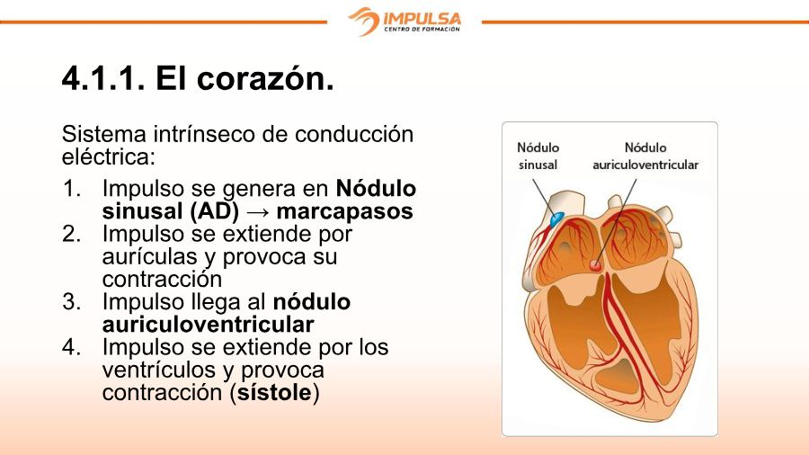
Nódulo sinusal y nódulo auriculoventricular (diap. 13)
Entiéndelo: El corazón lleva su propio «enchufe»: la chispa nace en el nódulo sinusal, contrae las aurículas, pasa por el nódulo auriculoventricular y contrae los ventrículos.
Truco:Sinusal → aurículas → AV → ventrículos: de arriba abajo.
Ponte a prueba: Explica los 4 pasos del sistema de conducción eléctrica del corazón.
9
Inervación del nódulo sinusal
Diapositiva 14
Lo que dice la profe
Nódulo sinusal recibe inervación simpática y parasimpática
Simpática aumenta frecuencia
Parasimpática reduce frecuencia
Entiéndelo: El sistema nervioso no crea el latido, pero lo acelera (simpático, en tensión o ejercicio) o lo frena (parasimpático, en reposo).
Truco:Simpático = Sube; Parasimpático = Para.
Ponte a prueba: ¿Qué efecto tienen el simpático y el parasimpático sobre la frecuencia cardiaca?
10
Arterias, venas y capilares
Diapositivas 15 y 16 · imprescindible
Lo que dice la profe
El sistema vascular: Conjunto de vasos sanguíneos del organismo
Arterias: salen del corazón y se ramifican hasta arteriolas. Paredes muy fuertes
Venas: conducen sangre hacia el corazón. Las más pequeñas se llaman vénulas. Paredes delgadas (baja P). Presentan válvulas semilunares (evitan retroceso de la sangre)
Capilares: vasos de pequeño calibre, en ellos ocurre intercambio de sustancias. Paredes muy finas y permeables
Válvulas semilunares: En las venas, pequeñas puertas que impiden que la sangre vuelva atrás.
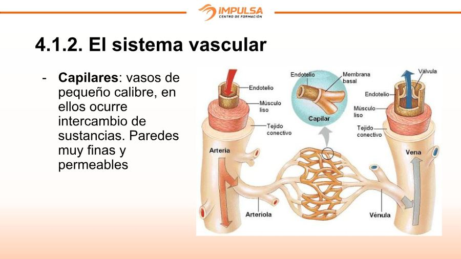
Arteria, capilares y vena (diap. 16)
Entiéndelo: Arterias: salen del corazón con fuerza. Venas: vuelven con poca presión y necesitan válvulas. Capilares: finísimos, donde se hace el intercambio.
Truco:A = Aleja del corazón; V = Vuelve.
Ponte a prueba: Diferencia arterias, venas y capilares.
11
Las 3 capas de arterias y venas
Diapositiva 17 · imprescindible
Lo que dice la profe
Paredes de arterias y venas presentan 3 capas concéntricas:
Íntima: endotelio plano, en contacto con la sangre, evita coagulación
Media: capa más gruesa, células musculares lisas y tejido conjuntivo. Mayor en arterias que en venas
Adventicia: externa. Fibras elásticas y de colágeno. Más gruesa en venas que arterias
Endotelio: La capa de células que tapiza el interior de los vasos.
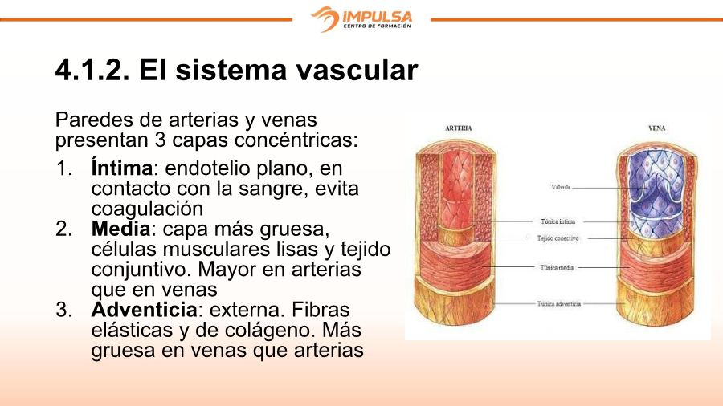
Capas de la pared de una arteria y una vena (diap. 17)
Entiéndelo: La media (músculo) es más gruesa en las arterias porque aguantan más presión; la adventicia es más gruesa en las venas.
Truco: De dentro afuera: Í-M-A (Íntima, Media, Adventicia).
Ponte a prueba: Di las 3 capas de la pared de arterias y venas y cuál es más gruesa en cada tipo de vaso.
12
Los circuitos
Diapositivas 18 y 19 · imprescindible
Lo que dice la profe
Sistema cerrado, sangre fluye de forma continua por el organismo impulsada por corazón. Volemia ha de ser constante.
Circuito menor o pulmonar: sangre del corazón a los pulmones y la devuelve al corazón oxigenada
Circuito mayor o sistémico: sangre oxigenada desde el corazón hasta el resto del organismo y de vuelta desoxigenada
Volemia: La cantidad total de sangre que circula.
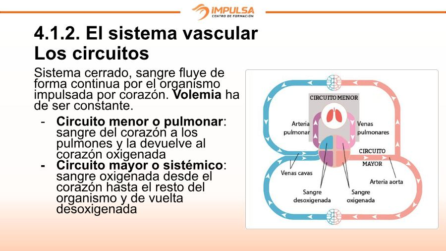
Circuito menor y circuito mayor (diap. 18)
Entiéndelo: Dos vueltas: una corta para cargar oxígeno en los pulmones y una larga para repartirlo por todo el cuerpo.
Truco:Menor = pulmones · Mayor = todo el cuerpo.
Ponte a prueba: Explica el circuito menor y el circuito mayor.
13
El sistema linfático
Diapositivas 20 y 21 · imprescindible
Lo que dice la profe
Intercambio de sustancias en los capilares. En espacio intercelular queda filtrado de plasma procedente de capilares: linfa.
Capilares linfáticos captan linfa y convergen para formar vasos linfáticos, de ahí a ganglios linfáticos, se filtra la linfa y se devuelve al sistema vascular
Sistema de circulación abierto, llega a todos los tejidos. 3 funciones:
Recolectar y devolver líquido intersticial a la sangre
Absorber nutrientes del aparato digestivo y conducirlos a venas subclavias
Defender organismo de agentes patógenos: filtrado de la sangre
Linfa: El líquido que se escapa de los capilares y recoge el sistema linfático.
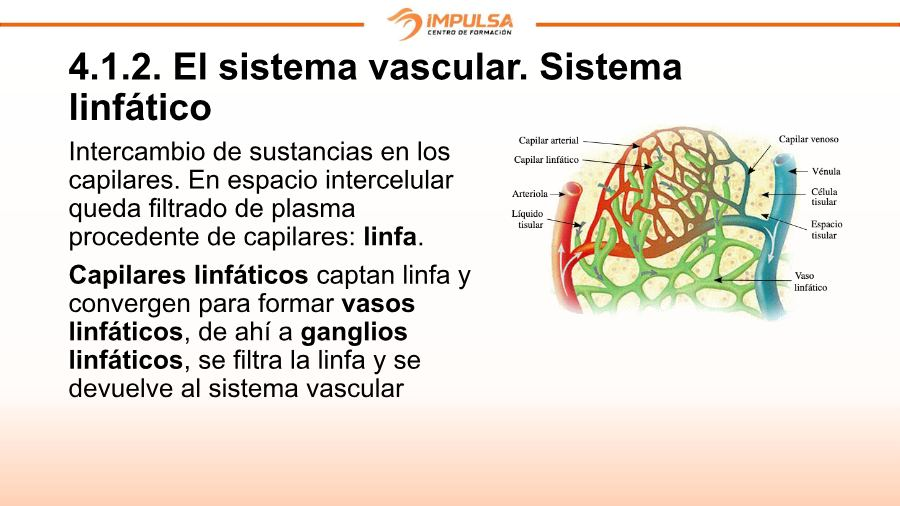
Capilares sanguíneos y linfáticos (diap. 20)
Entiéndelo: Es el «sistema de recogida»: devuelve a la sangre el líquido que se queda entre las células y, de paso, lo filtra en los ganglios.
Truco: Funciones: Devuelve, Absorbe, Defiende.
Ponte a prueba: ¿Qué es la linfa? Di las 3 funciones del sistema linfático.
14
El retorno venoso
Diapositiva 22
Lo que dice la profe
Impulso del corazón no llega a las venas, pero hace que la sangre de las arterias avance y “empuje” a la de las venas. Además, sístole del corazón tiene efecto succionador para la sangre de las venas cavas y pulmonares.
Entiéndelo: La sangre de las venas vuelve porque la de detrás la empuja y porque el corazón, al contraerse, la «aspira».
Truco:Empujón + succión.
Ponte a prueba: ¿Cómo vuelve la sangre al corazón por las venas?
15
La sangre y la hemodinámica
Diapositivas 23 y 24 · imprescindible
Lo que dice la profe
La sangre: Tejido conectivo con ME líquida (plasma) y células sanguíneas (eritrocitos y leucocitos) y fragmentos celulares (plaquetas).
Hemodinámica: Estudio de la dinámica de la sangre en el interior de los vasos. 2 parámetros hemodinámicos esenciales:
Tensión arterial
Volemia
Hemodinámica: «Estudio de la dinámica de la sangre en el interior de los vasos.»
Entiéndelo: La sangre es un tejido líquido. La hemodinámica mira dos cosas: con qué presión va y cuánta hay.
Truco:Presión y cantidad: tensión y volemia.
Ponte a prueba: ¿Qué es la sangre? ¿Qué estudia la hemodinámica y cuáles son sus 2 parámetros?
16
La tensión arterial
Diapositiva 25 · imprescindible
Lo que dice la profe
Presión que ejerce la sangre impulsada por el corazón sobre las paredes de las arterias. Oscila a lo largo del ciclo cardíaco.
Tensión arterial máxima o sistólica (TAS): sangre empujada hacia las arterias aumenta la presión en ellas. Valor normal entre 120 y 140 mmHg
Tensión arterial mínima o diastólica (TAD): diástole y cierre de válvula aórtica. Valor normal entre 60 y 90 mmHg
Tensión arterial: «Presión que ejerce la sangre impulsada por el corazón sobre las paredes de las arterias.»
mmHg: Milímetros de mercurio, la unidad de la tensión.
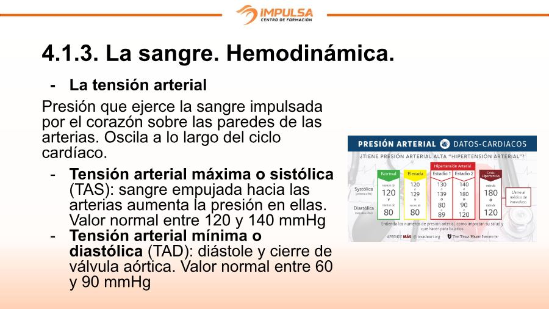
Valores de presión arterial (diap. 25)
Entiéndelo: La máxima es al bombear (sístole) y la mínima al relajarse (diástole).
Truco: Máxima 120-140, mínima 60-90.
Ponte a prueba: ¿Qué es la tensión arterial? Di los valores normales de la sistólica y la diastólica.
17
Regulación de la presión sanguínea
Diapositiva 26 · imprescindible
Lo que dice la profe
Tensión varía de una persona a otra en función de edad, nerviosismo, ejercicio…
Presión sanguínea regulada por:
SN vegetativo, actúa a nivel de gasto cardíaco, fr cardiaca, fuerza de contracción y resistencia periférica
Sistema endocrino: hormonas que aumentan o reducen la volemia (Antidiurética y aldosterona)
Aparato urinario: regulación de la cantidad de iones y H2O que se retiran de la sangre y se eliminan con la orina
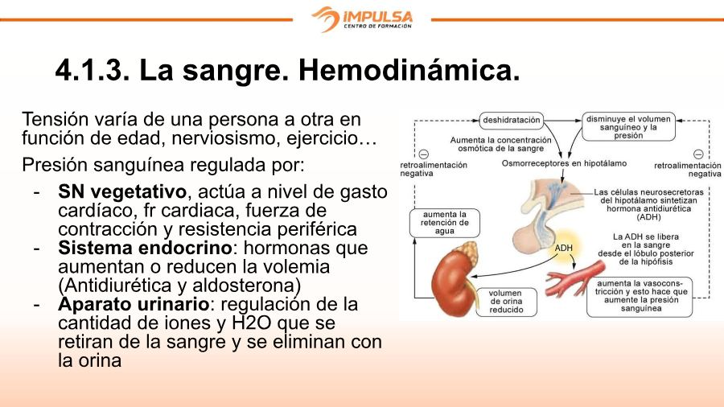
Regulación de la presión por la ADH (diap. 26)
Entiéndelo: Tres mandos: los nervios (rápido), las hormonas (cambian el volumen de sangre) y el riñón (decide cuánta agua y sales se van con la orina).
Truco:Nervios, Hormonas, Riñón.
Ponte a prueba: ¿Qué 3 sistemas regulan la presión sanguínea y cómo?
18
La volemia
Diapositiva 27 · imprescindible
Lo que dice la profe
Volemia: Volumen total de sangre circulante (5-6 litros en adultos).
Distintos mecanismos para mantenerla constante (sed, aumento o reducción de reabsorción de H2O).
Aumento de volemia = aumento de TA, puede llevar a edema, rotura de vasos pequeños…
Hipovolemia →Hipotensión puede comprometer la circulación
Hipovolemia: Poca sangre circulando.
Entiéndelo: Más sangre = más presión (riesgo de edema o roturas). Menos sangre = menos presión (la sangre no llega bien).
Truco:5-6 litros; volemia y tensión suben y bajan juntas.
Ponte a prueba: ¿Qué es la volemia, cuánto vale y qué pasa si sube o si baja?
19
La hemostasia y sus 3 fases
Diapositivas 28 y 29 · imprescindible
Lo que dice la profe
Conjunto de procesos fisiológicos que tiene por objetivo detener una hemorragia. Ocurre en 3 fases:
Vasoconstricción local: rotura del endotelio detectada por plaquetas, liberan sustancias que provocan vasoconstricción. Se consigue reducir el flujo de sangre que llega a la zona.
Formación de agregado plaquetario: estrechamiento del vaso por vasoconstricción favorece aglomeración de las plaquetas, agregado tapona zona lesionada.
Formación del coágulo: agregado se transforma en coágulo (coagulación)
Hemostasia: «Conjunto de procesos fisiológicos que tiene por objetivo detener una hemorragia.»
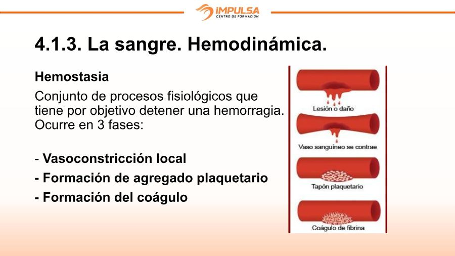
Hemostasia: vaso que se contrae, tapón plaquetario y coágulo (diap. 28)
Entiéndelo: Primero se cierra un poco el grifo (vasoconstricción), luego se tapa con plaquetas y por último se refuerza con un coágulo.
Truco:Cierra, Tapa, Cuaja.
Ponte a prueba: ¿Qué es la hemostasia? Explica sus 3 fases.
20
La coagulación: de fibrinógeno a fibrina
Diapositiva 30 · imprescindible
Lo que dice la profe
La coagulación–Cascada de coagulación: Transformación del fibrinógeno (soluble) en fibrina (insoluble), precipita en forma de filamentos que se entrelazan y atrapan elementos celulares hasta formar el coágulo.
Para la transformación se requiere activación del enzima trombina por parte de los factores de coagulación
Fibrina: Los hilos que atrapan las células y forman el coágulo.
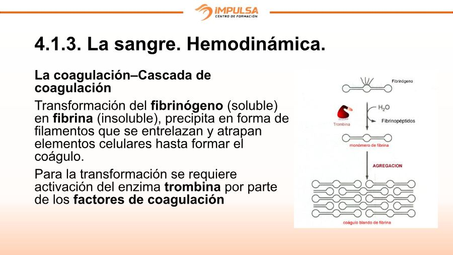
Fibrinógeno, monómeros de fibrina y coágulo (diap. 30)
Entiéndelo: El fibrinógeno va disuelto en la sangre; la trombina lo convierte en fibrina, unos hilos que forman una red y atrapan las células.
Ponte a prueba: ¿En qué consiste la coagulación y qué enzima la hace posible?
21
Vía intrínseca y vía extrínseca
Diapositiva 31 · imprescindible
Lo que dice la profe
Cascada de coagulación mediante 2 mecanismos:
Vía intrínseca: activada por lesión vascular. Endotelio es antitrombogénico, pero el tejido tras él es trombogénico. Al romperse, plaquetas se fijarán activando coagulación
Vía extrínseca: lesión tisular libera factor de coagulación que desencadena cascada de coagulación.
Las dos tienen una vía común
Trombogénico: Que favorece la formación de coágulos.
Entiéndelo: Dos formas de encender la cascada: desde dentro del vaso (intrínseca) o desde el tejido dañado (extrínseca). Las dos acaban en el mismo camino.
Truco:Intrínseca = vaso · Extrínseca = tejido.
Ponte a prueba: Diferencia la vía intrínseca y la extrínseca de la coagulación.
22
La vía común
Diapositiva 32 · imprescindible
Lo que dice la profe
Cascada de coagulación: vía común
Activación factor X
Factor Xa activa factor II (protrombina→trombina)
Factor IIa activa Factor I. (fibrinógeno→fibrina soluble)
Factor XIIIa insolubiliza Ia→precipitación
Protrombina / trombina: La protrombina es la forma inactiva; la trombina, la activa.
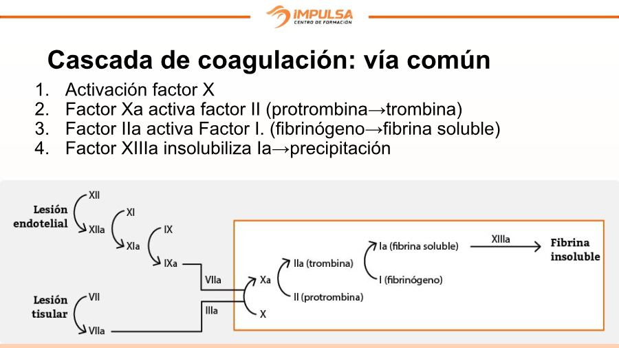
Cascada de coagulación: vía común (diap. 32)
Entiéndelo: Como fichas de dominó: X activa II (trombina), II activa I (fibrina) y XIII la vuelve insoluble.
Truco:10 → 2 → 1 → 13.
Ponte a prueba: Ordena los 4 pasos de la vía común de la coagulación.
23
Factores según su lugar de síntesis
Diapositiva 34
Lo que dice la profe
Factores de coagulación: Según su lugar de síntesis
Plasmáticos: VII, IX, X, XI, XII y XIII, precalicreína (PK) y quininógeno de alto peso molecular
Hepáticos: I, II, V, VII, VIII-C, IX, X, XI, LXIII, PK
Tisulares: tromboplastina tisular, colágeno, parte del factor VIII
Plaquetarios: FP3
Entiéndelo: La mayoría de los factores los fabrica el hígado: por eso una enfermedad del hígado altera la coagulación.
Ponte a prueba: ¿Qué factores dependen de la vitamina K y qué les pasa si falta?
25
Factores reguladores o inhibidores
Diapositiva 36
Lo que dice la profe
Factores reguladores o inhibidores de la coagulación:
Flujo sanguíneo normal: arrastra parte de los factores activados, diluyendo su acción.
Hígado: actúa como filtro, retirando de la sangre en circulación los factores activados e inactivándolos.
Proteasas: que degradan o inhiben factores: Proteína C, Proteína S, Antitrombina III
Proteasas: Enzimas que rompen proteínas.
Entiéndelo: La coagulación tiene frenos para que no se forme un coágulo donde no toca: la propia sangre que corre, el hígado y unas proteínas inhibidoras.
Truco: Frenos: Flujo, Hígado, Proteasas.
Ponte a prueba: Di los 3 mecanismos que regulan o frenan la coagulación.
26
Proteína C, proteína S y antitrombina III
Diapositivas 37 y 38 · imprescindible
Lo que dice la profe
Proteína C: proteína plasmática de síntesis hepática, dependiente de vit. K. Se activa en presencia de trombina y degrada factores Va y VIIIa, limitando proyección de cascada.
Proteína S: plasmática hepática, cofactor de proteína C
Antitrombina III (AT III): glucoproteína sintetizada en el hígado. No dependiente de vitamina K. Principal inhibidora de la coagulación. Inhibe irreversiblemente varios factores: trombina, calicreína, IXa, Xa, XIa y XIIa. Su acción se ve aumentada por la heparina, que se encuentra en el endotelio de vasos sanguíneos y en gránulos de mastocitos
Heparina: Sustancia anticoagulante que potencia la antitrombina III.
Mastocitos: Células del sistema inmunitario que guardan sustancias en gránulos.
Entiéndelo: La proteína C (con la S de ayudante) corta la cascada; la antitrombina III es el freno principal, y la heparina lo refuerza.
Truco:S = Socia de la C. AT III + heparina = freno principal.
Ponte a prueba: ¿Qué hacen la proteína C, la proteína S y la antitrombina III? ¿Qué sustancia potencia la AT III?
27
La reparación tras el coágulo
Diapositivas 39 y 40
Lo que dice la profe
Tras establecimiento del coágulo, es necesario reparar tejidos lesionados mediante cicatrización.
Coágulo hace de base, células migran y se fijan a él. Principalmente neutrófilos (limpian) y macrófagos (inducen reparación)
Células endoteliales realizan angiogénesis (nuevos vasos son muy permeables, se forman edemas)
Fibroblastos proliferan y aportan colágeno que rellena la zona en 5-7 días
Células basales del epitelio proliferan bajo costra del coágulo y después originan nuevo epitelio.
Tras un mes, cicatriz formada por tejido conjuntivo acelular recubierto de epidermis
Angiogénesis: Formación de vasos sanguíneos nuevos.
Entiéndelo: El coágulo es el andamio: llegan los limpiadores, se hacen vasos nuevos, se rellena con colágeno y se cubre con piel nueva.
Truco:Limpiar, vasos, colágeno (5-7 días), piel; cicatriz al mes.
Ponte a prueba: Explica cómo se repara el tejido después de formarse el coágulo.
28
La fibrinólisis
Diapositiva 41 · imprescindible
Lo que dice la profe
Degradación de la fibrina es catalizada por plasmina y sus restos son captados por macrófagos. Plasmina formada por activación de plasminógeno, sintetizado en el hígado. Activación por:
Factores intrínsecos (la propia cascada)
Factores extrínsecos: activador tisular del plasminógeno (t-PA), un enzima sintetizado en endotelio vascular.
Plasmina: La enzima que deshace la fibrina del coágulo.
Entiéndelo: Cuando el coágulo ya no hace falta, la plasmina lo deshace. El t-PA es el que la activa desde el endotelio.
Truco:Plasminógeno → plasmina → adiós fibrina.
Ponte a prueba: ¿Qué es la fibrinólisis, qué enzima la hace y cómo se activa?
29
La isquemia
Diapositiva 42 · imprescindible
Lo que dice la profe
Patologías en vasos, corazón y circulación.
Isquemia: reducción del flujo sanguíneo en una zona del organismo, provocando que sus células no reciban oxígeno y sufran lesiones graves, incluso irreversibles.
Isquemia lleva a hipoxia de los tejidos, consecuencias más graves en corazón y cerebro.
Isquemia: «Reducción del flujo sanguíneo en una zona del organismo, provocando que sus células no reciban oxígeno y sufran lesiones graves, incluso irreversibles.»
Hipoxia: Falta de oxígeno en los tejidos.
Entiéndelo: Isquemia es que no llega sangre; hipoxia es la consecuencia: no llega oxígeno.
Truco:Isquemia → hipoxia; lo peor, en corazón y cerebro.
Ponte a prueba: ¿Qué es la isquemia, qué provoca y dónde es más grave?
30
Clasificación de las enfermedades vasculares
Diapositiva 43
Lo que dice la profe
Enfermedades vasculares en arterias o venas.
Patologías vasculares por afectación de vasos: Aneurismas, Varices
Entiéndelo: O el vaso se deforma (aneurisma, varices) o se tapa (aterosclerosis, trombosis, embolia).
Truco:Se deforma o se tapa.
Ponte a prueba: Clasifica las patologías vasculares.
31
Aneurismas
Diapositivas 44 y 45 · imprescindible
Lo que dice la profe
Dilatación patológica de un segmento de un vaso sanguíneo, habitualmente a nivel arterial (aorta).
Factores de riesgo: varones de 60 años, hipertensión, fumadores, factores de aterosclerosis.
Síntomas y evolución dependen de localización. La mayoría asintomáticos, aunque compresión de tejidos puede provocar dolor torácico, tos, ronquera o disfagia
Tratamiento: Según zona afectada. Medidas para controlar hipertensión + vigilancia periódica cada 6 meses. En caso de empeoramiento: tratamiento quirúrgico con implantación de injerto.
Aneurisma: «Dilatación patológica de un segmento de un vaso sanguíneo, habitualmente a nivel arterial»
Disfagia: Dificultad para tragar.
Entiéndelo: La pared de la arteria cede y se hincha. Casi nunca avisa; si molesta es porque aprieta lo que tiene al lado.
Truco: Riesgo: hombre, 60, hipertenso, fumador. Control cada 6 meses.
Ponte a prueba: ¿Qué es un aneurisma, dónde suele aparecer, cuáles son sus factores de riesgo y su tratamiento?
32
Varices
Diapositivas 46 y 47 · imprescindible
Lo que dice la profe
Varices: Dilataciones venosas, generalmente en extremidades inferiores.
Alteración en válvulas semilunares dificulta retorno venoso, sangre se acumula y venas se dilatan y se vuelven tortuosas.
Ponte a prueba: ¿Qué son las varices y por qué se producen? Di factores de riesgo y tratamientos.
33
Aterosclerosis
Diapositivas 48 y 49 · imprescindible
Lo que dice la profe
Aterosclerosis: Depósito de placas (ateromas) en la pared interna de las arterias. Placas compuestas por grasas, colesterol, Ca y otras sustancias. Con el tiempo se endurecen y estrechan luz arterial. Afectan a cualquier arteria, según zona afectada, distintas enfermedades
Además de reducción de flujo, existe riesgo de que la placa se suelte y pase al flujo sanguíneo, pudiendo llegar a bloquear vasos más pequeños.
Prevención clave: Dieta sana, baja en grasas saturadas, ejercicio regular. Controlar hipertensión y diabetes
Ateroma: Placa de grasa y colesterol en la pared de una arteria.
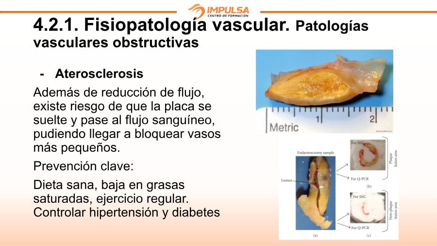
Placa de ateroma (diap. 49)
Entiéndelo: La grasa se pega a la pared como la cal en una tubería: estrecha el paso y, si se suelta un trozo, puede tapar un vaso más pequeño.
Truco:Atero = papilla (de grasa); esclerosis = endurecimiento.
Ponte a prueba: ¿Qué es la aterosclerosis, de qué están hechas las placas, qué riesgos tiene y cómo se previene?
34
Trombosis: qué es y sus causas
Diapositiva 50 · imprescindible
Lo que dice la profe
Trombosis: Formación de un coágulo (trombo) en el interior de un vaso sanguíneo. Muchas causas posibles:
Alteración en vasos por aterosclerosis, ruptura traumática o alteración del flujo sanguíneo
Alteración en factores de coagulación o en anticoagulantes
Alteraciones en composición de la sangre (⬇fracción líquida)
Alteraciones vasculares que provocan flujos en torbellino (estenosis mitral)
Lesiones en endotelio.
Trombo: Un coágulo dentro de un vaso.
Entiéndelo: Un coágulo donde no debe: porque el vaso está dañado, porque la sangre coagula de más o porque circula mal.
Ponte a prueba: ¿Qué es una trombosis? Di sus causas.
35
Trombosis según el grado de oclusión
Diapositivas 51 y 52 · imprescindible
Lo que dice la profe
Clasificación según nivel de oclusión y lugar en que se originan:
Según grado de oclusión: Ocluyente, Mural
Según ubicación: Por precipitación, Por coagulación, Hialina
Según grado de oclusión
Ocluyente: obstrucción total
Mural: obstrucción parcial
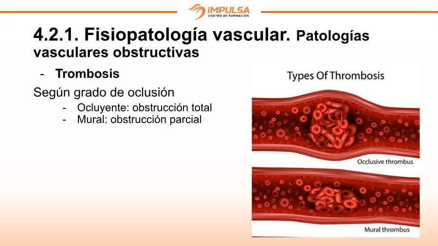
Trombo oclusivo y trombo mural (diap. 52)
Entiéndelo: El mural se pega a la pared (muro) y deja pasar algo; el ocluyente lo tapa todo.
Truco:Mural = muro, a un lado; ocluyente = ocluye todo.
Ponte a prueba: Clasifica las trombosis según el grado de oclusión.
36
Trombosis según su ubicación
Diapositivas 53 y 54 · imprescindible
Lo que dice la profe
Trombosis por precipitación (trombos blancos). Carácter mural, principalmente en arterias o corazón. Causa más común es presencia de ateromas. Trombo compuesto por plaquetas, escasa fibrina y hematíes.
Trombosis por coagulación (trombos rojos). En venas tras enlentecimiento de circulación. Oclusivos. Trombo formado por mezcla de fibrina y plaquetas (más fibrina)
Trombosis hialina: en vénulas o capilares. Provocadas por el desprendimiento de plaquetas y fibrinas
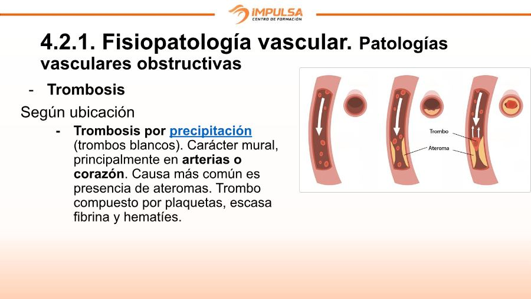
Trombo sobre una placa de ateroma (diap. 53)
Entiéndelo: Blancos en arterias (sobre todo plaquetas, sobre un ateroma); rojos en venas lentas (sobre todo fibrina, que atrapa glóbulos rojos); hialinos en los vasos más pequeños.
Ponte a prueba: Compara la trombosis por precipitación, por coagulación y hialina.
37
Gravedad y detección: el dímero D
Diapositiva 55 · imprescindible
Lo que dice la profe
Cualquier trombosis es grave (impide irrigación) y con consecuencias diversas.
Trombos no provocan síntomas hasta que ocurre el daño→ cuando algo puede favorecer formación de trombos se administran anticoagulantes preventivamente.
Detección de trastornos en coagulación mediante análisis de sangre (detección de dímero D)
Dímero D: Un resto de la fibrina que, en un análisis, avisa de coágulos.
Entiéndelo: Como no avisan, se previenen con anticoagulantes; en el laboratorio, el dímero D es la pista.
Truco:Dímero D = Detecta coágulos.
Ponte a prueba: ¿Por qué se dan anticoagulantes de forma preventiva y qué se mide en sangre para detectar trastornos de coagulación?
38
La embolia
Diapositiva 56 · imprescindible
Lo que dice la profe
Embolias: Oclusión parcial o total de un vaso debido a una partícula extraña circulante (émbolo) que se encaja en un vaso de pequeño calibre.
Émbolo: Una partícula que viaja por la sangre hasta que se queda atascada.
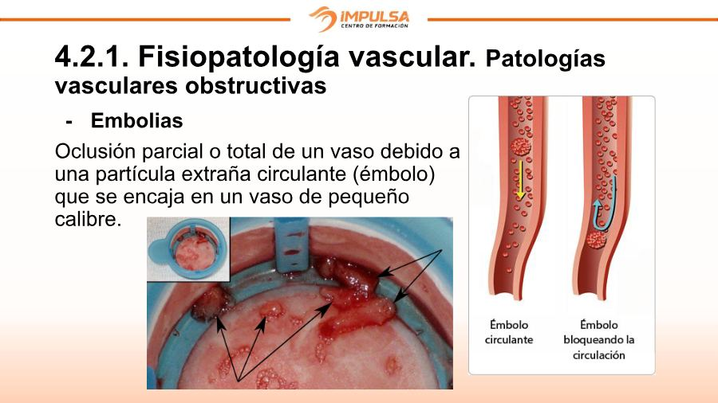
Émbolo circulante y émbolo bloqueando la circulación (diap. 56)
Entiéndelo: El trombo se forma en el sitio; el émbolo viaja y tapa un vaso lejos de donde salió.
Truco:Trombo = quieto · Émbolo = viajero.
Ponte a prueba: ¿Qué es una embolia y en qué se diferencia de una trombosis?
39
Tipos de embolia
Diapositiva 57 · imprescindible
Lo que dice la profe
Según la naturaleza del émbolo distinguimos:
Tromboembolia (la mayoría)
Embolia grasa: infiltración de tejido adiposo en vasos tras fractura ósea.
Embolia aérea o gaseosa: en buzos, cirugías en tórax o cuello, o heridas profundas en tórax.
Embolia séptica: pus, puede contener bacterias
Embolia tisular: fragmentos de tejido
Embolia de cuerpo extraño: materiales extraños al organismo.
Embolia de líquido amniótico: células fetales, cabello, etc. que entran en torrente de la madre
Entiéndelo: El tipo de embolia lo da el «viajero»: un trozo de trombo, grasa, aire, pus, tejido, un objeto o líquido amniótico.
Ponte a prueba: Di los tipos de embolia según el émbolo. ¿Cuál es la más frecuente?
40
Accidentes vasculares cerebrales (AVC o ictus)
Diapositiva 58 · imprescindible
Lo que dice la profe
Accidentes vasculares cerebrales (AVC o ictus): Interrupciones del riego sanguíneo en alguna parte del cerebro. Puede deberse a estenosis u obstrucción (AVC isquémicos) o rotura de vaso (AVC hemorrágicos)
Ictus: Otro nombre del accidente vascular cerebral.
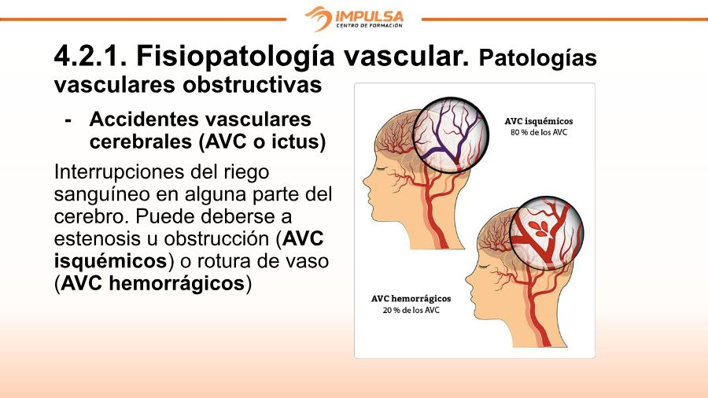
AVC isquémico y AVC hemorrágico (diap. 58)
Entiéndelo: O el vaso se tapa (isquémico) o se rompe (hemorrágico).
Truco:Tapón o grieta.
Ponte a prueba: ¿Qué es un AVC y cuáles son sus 2 tipos?
41
AVC isquémicos
Diapositiva 59 · imprescindible
Lo que dice la profe
AVC isquémicos constituyen el 80%:
De origen extravascular: estenosis de arterias debida a vasoconstricción (por disminución del gasto cardiaco o hipotensión arterial)
De origen intravascular: émbolo en arteria.
Aterotrombótico: 55%. Trombo en arterias que irrigan el cerebro→isquemia. Ateromas favorecen.
Embólico: émbolo llega por la circulación. Causas diversas: cardiopatías, fracturas, tumores, fármacos…
Estenosis: Estrechamiento de un vaso.
Entiéndelo: 8 de cada 10 ictus son por falta de riego. Lo más frecuente es un trombo sobre un ateroma en las arterias del cerebro.
Truco: Isquémicos 80 %; aterotrombótico 55 %.
Ponte a prueba: ¿Qué porcentaje de los AVC son isquémicos y cómo se clasifican?
42
AVC hemorrágicos
Diapositiva 60 · imprescindible
Lo que dice la profe
AVC hemorrágicos: hemorragia cerebral o apoplejía (20% de los AVC). Causado por pico hipertensivo o aneurisma congénito (aparte de traumas)
Apoplejía: Hemorragia cerebral.
Entiéndelo: Un vaso del cerebro se rompe, por un pico de tensión o por un aneurisma de nacimiento.
Truco: Hemorrágicos 20 %: «pico o globo» (pico hipertensivo o aneurisma).
Ponte a prueba: ¿Qué es un AVC hemorrágico, qué porcentaje supone y qué lo causa?
43
Síntomas del AVC
Diapositiva 61 · imprescindible
Lo que dice la profe
Síntomas AVC muy variados (según área cerebral).
Pérdida de fuerza en 1 brazo o pierna, o cara (hemiparesia/hemiplejia)
Dificultad para expresarse, entender o lenguaje ininteligible (disartria)
Dificultad al caminar, pérdida de equilibrio o coordinación
Mareos, dolor de cabeza brusco..
Pérdida de visión en 1 o ambos ojos
Hemiparesia / hemiplejia: Debilidad / parálisis de un lado del cuerpo.
Disartria: Dificultad para articular las palabras.
Entiéndelo: Dependen de la zona del cerebro afectada, y casi siempre empiezan de golpe y en un lado del cuerpo.
Truco:Fuerza, habla, equilibrio, cabeza, vista.
Ponte a prueba: Di 5 síntomas de un AVC.
44
Factores de riesgo del AVC
Diapositiva 62 · imprescindible
Lo que dice la profe
Factores de riesgo AVC:
No modificables: edad, sexo, raza, antecedentes familiares
Modificables: hipertensión arterial, tabaco, consumo de grasas, diabetes, enfermedad cardíaca, alcohol, obesidad, vida sedentaria, anticonceptivos orales
Entiéndelo: Los que no puedes cambiar vienen contigo; los modificables dependen de hábitos y del control de otras enfermedades.
Truco: No modificables: «E-S-R-A»: Edad, Sexo, Raza, Antecedentes.
Ponte a prueba: Di los factores de riesgo del AVC no modificables y 5 modificables.
45
Las patologías del corazón
Diapositiva 63
Lo que dice la profe
Arritmias
Cardiopatías isquémicas
Valvulopatías
Trastornos hemodinámicos (hiper e hipotensión) también afectan a actividad del corazón.
Entiéndelo: Fallos del ritmo, del riego o de las válvulas.
Truco:Ritmo, riego, válvulas.
Ponte a prueba: Di los 3 grupos de patologías cardiacas.
46
Arritmias
Diapositiva 64 · imprescindible
Lo que dice la profe
Arritmias: Trastorno en los latidos o en el ritmo del corazón. Pueden ser signo de distintos trastornos o consecuencia de un mal funcionamiento del sistema eléctrico del corazón.
3 trastornos básicos:
Taquicardia: más de 100 latidos/minuto
Bradicardia: menos de 60 latidos/minuto
Patrón irregular
Taquicardia: Corazón demasiado rápido.
Bradicardia: Corazón demasiado lento.
Entiéndelo: Lo normal está entre 60 y 100 latidos por minuto: por encima es taquicardia, por debajo bradicardia.
Truco:Taqui = rápido (>100) · Bradi = lento (<60).
Ponte a prueba: ¿Qué es una arritmia? Di sus 3 trastornos básicos con sus cifras.
47
Cardiopatía isquémica y SCA
Diapositiva 65 · imprescindible
Lo que dice la profe
Cardiopatías isquémicas: Obstrucción en arterias coronarias o en sus ramificaciones provocará isquemia, que causará hipoxia del miocardio afectada.
Síndrome coronario agudo (SCA): conjunto de síntomas clínicos compatibles con cardiopatía isquémica aguda.
Síndrome coronario agudo (SCA): Los síntomas de un corazón al que de repente le falta riego.
Entiéndelo: Se tapa una coronaria → no llega sangre al músculo del corazón → le falta oxígeno.
Truco:Coronaria tapada → isquemia → hipoxia del miocardio.
Ponte a prueba: ¿Qué es una cardiopatía isquémica y qué es el síndrome coronario agudo?
48
Angina de pecho
Diapositiva 66 · imprescindible
Lo que dice la profe
Patologías más comunes que causan cardiopatía isquémica:
Angor inestable o angina de pecho: dolor torácico debido a isquemia de miocardio. Dolor suele ser de corta duración, no causa lesiones permanentes, puede evolucionar hacia infarto agudo de miocardio. Suele deberse a presencia de ateromas en vasos coronarios.
Angor: Otro nombre de la angina de pecho.
Entiéndelo: Es un aviso: el corazón se queja por falta de riego, pero todavía no se ha muerto tejido.
Truco:Angina = aviso · Infarto = daño.
Ponte a prueba: ¿Qué es la angina de pecho, cuánto dura y deja lesiones?
49
Infarto agudo de miocardio
Diapositiva 67 · imprescindible
Lo que dice la profe
Infarto agudo de miocardio: cuadro de dolor más intenso debido a necrosis de tejido cardiaco por falta de irrigación, que se mantiene más de 20 minutos. Causa más habitual es un trombo que bloquea circulación de arteria coronaria, se suele formar por ateromas.
Necrosis: Muerte de las células de un tejido.
Entiéndelo: Si la falta de riego dura más de 20 minutos, el músculo se muere (necrosis): eso ya es un infarto.
Truco: Infarto: >20 minutos + necrosis.
Ponte a prueba: ¿Qué es un infarto agudo de miocardio, cuánto dura la falta de riego y cuál es su causa más habitual?
50
Valvulopatías
Diapositiva 68 · imprescindible
Lo que dice la profe
Valvulopatías: Alteraciones en 1 ó varias de las válvulas del corazón, que impiden apertura o cierre completo, quitando efectividad al bombeo.
Causas habituales: envejecimiento (endurecimiento y calcificación valvular), endocarditis infecciosa (bacterias se fijan al endocardio de una válvula y comienzan a multiplicarse→vegetaciones)
Endocarditis infecciosa: Infección del endocardio de una válvula por bacterias.
Entiéndelo: Una puerta que no abre o no cierra del todo: el corazón bombea peor.
Truco: Causas: edad o bacterias.
Ponte a prueba: ¿Qué es una valvulopatía y cuáles son sus causas habituales?
51
Alteraciones de la tensión arterial
Diapositiva 69
Lo que dice la profe
Alteraciones de la tensión arterial: Pueden impedir funcionamiento normal del aparato cardiovascular. Altamente ligadas a volemia. Cuando tensión supera márgenes de normalidad o se mantienen valores elevados de forma continuada las consecuencias pueden ser graves.
Entiéndelo: La tensión va de la mano de la volemia: si una se descontrola, la otra también.
Truco:Tensión ↔ volemia.
Ponte a prueba: ¿Con qué parámetro están muy ligadas las alteraciones de la tensión arterial?
52
Hipertensión arterial (HTA)
Diapositivas 70 y 71 · imprescindible
Lo que dice la profe
Principal factor de riesgo cardiovascular, “asesino silencioso” (asintomático)
Síntomas en hipertensión maligna: dolores de cabeza, confusión, cambios en la visión, sangrado nasal, mareos, náuseas y vómitos.
90% de los casos no hay causa concreta que desencadene HTA, por lo que se llama hipertensión primaria. Factores predisponentes: edad avanzada, antecedentes familiares, diabetes, colesterol, obesidad.
En un porcentaje más pequeño HTA es secundaria a consumo de alcohol, fármacos, enfermedades renales→Hipertensión secundaria.
Reconocimiento precoz esencial, si ya existe lesión se pueden desarrollar ictus, trombosis cerebrales, infartos o insuficiencia renal.
Tratamiento:
Hábitos de vida saludables: dieta mediterránea, control peso, no fumar
Uso de fármacos
Hipertensión primaria: La que no tiene una causa concreta (la mayoría).
Hipertensión secundaria: La que se debe a algo concreto: alcohol, fármacos, riñón.
Entiéndelo: No duele, pero va dañando vasos y órganos en silencio: por eso hay que medirla.
Ponte a prueba: ¿Por qué la HTA es el «asesino silencioso»? Diferencia la primaria de la secundaria.
53
Hipotensión y shock
Diapositiva 72 · imprescindible
Lo que dice la profe
Hipotensión arterial: Presión muy baja. y falta suministro de sangre a órganos y tejidos persona entra en shock. Generalmente por pérdida de líquidos (hemorragia, deshidratación, quemaduras, diarreas…) →Shock hipovolémico.
Síntomas: piel fría y sudada, pulso débil pero acelerado, respiración irregular, boca seca, pupilas dilatadas
Shock hipovolémico: Fallo circulatorio por perder mucho líquido.
Entiéndelo: Si se pierde mucho líquido, baja la presión y la sangre no llega a los órganos: el corazón late rápido para compensar, pero flojo.
Truco: Shock: fría, sudada, pulso rápido y débil.
Ponte a prueba: ¿Qué es el shock hipovolémico, qué lo causa y cuáles son sus síntomas?
54
El edema
Diapositiva 73 · imprescindible
Lo que dice la profe
Edemas: Acumulación de líquido en el espacio intercelular o intersticial o en cavidades del organismo.
Cantidad de líquido intersticial regulada por homeostasis.
H2O supone 60% de nuestro peso: 40% intracelular, 20% intercelular.
Sistema linfático recoge el plasma intersticial, edema se produce cuando se produce una secreción excesiva de líquido o cuando no se recupera de forma correcta
Edema: «Acumulación de líquido en el espacio intercelular o intersticial o en cavidades del organismo.»
Entiéndelo: O sale demasiado líquido de los vasos, o el sistema linfático no da abasto para recogerlo.
Truco: Agua: 60 = 40 dentro + 20 fuera de las células.
Ponte a prueba: ¿Qué es un edema y por qué se produce? ¿Cómo se reparte el agua del cuerpo?
55
Edemas según su localización
Diapositiva 74
Lo que dice la profe
Ascitis: Acúmulo de líquido en la cavidad peritoneal o abdominal.
Hidrotórax o derrame pleural. Acúmulo de líquido en la cavidad pleural o torácica.
Hidropericardio o derrame pericárdico. Acúmulo de líquido en la cavidad pericárdica.
Hidrocefalia. Dilatación de los ventrículos cerebrales por acumulación de líquido cefalorraquídeo.
Edema pulmonar. Acúmulo de líquido (trasudado) en el espacio intersticial del parénquima pulmonar.
Edemas cutáneos comunes. Se observan en picaduras de mosquito, araña, avispa o abeja, y contacto de la piel con ciertas plantas, como la ortiga.
Líquido cefalorraquídeo: El líquido que rodea el cerebro y la médula.
Entiéndelo: El nombre dice dónde está el líquido: abdomen (ascitis), tórax, pericardio, cerebro, pulmón o piel.
Ponte a prueba: Di los tipos de edema según su localización. ¿Qué es la ascitis?
56
Causas de los edemas
Diapositiva 75 · imprescindible
Lo que dice la profe
Aumento de la presión de la sangre a nivel capilar: resultado de insuficiencia cardíaca, hipervolemia, obstrucción venosa o varices
Aumento de la permeabilidad de los capilares: inflamación o daño vascular (quemaduras, traumatismos)
Disminución proteínas plasmáticas: plasma sale de los vasos para equilibrar [ ]. En cirrosis hepática, malnutrición, quemaduras y síndrome nefrótico.
Bloqueo del drenaje linfático: traumatismos, inflamación vías linfáticas y otras causas.
Síndrome nefrótico: Enfermedad del riñón que hace perder proteínas por la orina.
Entiéndelo: Cuatro razones: empuja más (presión), el vaso es un colador (permeabilidad), la sangre ya no «tira» del agua (pocas proteínas) o el desagüe está tapado (linfa).
Truco:Presión, Permeabilidad, Proteínas, Linfa: «3 P y una L».
Ponte a prueba: Di las 4 causas de los edemas con un ejemplo de cada una.
57
Edema generalizado y localizado
Diapositivas 76 y 77 · imprescindible
Lo que dice la profe
Generalizado: hinchazón difusa de todos los tejidos y órganos del cuerpo. Causas más habituales: insuficiencia cardiaca, síndrome nefrótico e insuficiencia hepática
Edema localizado: en una parte concreta del cuerpo. Suele deberse a disminución de circulación linfática y aumento de presión venosa en zona afectada. También a un aumento local de la permeabilidad capilar causado por una inflamación
Anasarca: Edema generalizado de todo el cuerpo.
Entiéndelo: El generalizado viene de un órgano que falla (corazón, riñón, hígado); el localizado, de un problema en esa zona.
Truco: Generalizado = corazón, riñón, hígado.
Ponte a prueba: Diferencia el edema generalizado del localizado y di sus causas.
58
Coagulación intravascular diseminada (CID)
Diapositiva 78 · imprescindible
Lo que dice la profe
Existen trastornos que provocan una coagulación generalizada: coagulación intravascular diseminada (CID).
CID se produce por activación y estimulación excesiva del sistema de la coagulación.
Entiéndelo: La coagulación se dispara por todo el cuerpo a la vez.
Truco:CID = Coagula en todos los sitIos a la vez.
Ponte a prueba: ¿Qué es la CID y cuáles son sus causas comunes?
59
Déficit de vitamina K y hemofilia
Diapositiva 79 · imprescindible
Lo que dice la profe
Alteraciones propias de la coagulación→ trastornos por déficit:
Deficiencia de vitamina K: esencial para formación de protrombina, factores VII, IX, X y proteína C.
Hemofilia: deficiencias factores VIII y IX. Transmitida por el cromosoma X.
Hemofilia: Enfermedad hereditaria en la que la sangre no coagula bien.
Entiéndelo: Si faltan factores, la sangre no coagula bien y se sangra más. En la hemofilia faltan el VIII o el IX y se hereda por el X.
Truco: Hemofilia: 8 y 9, ligada al X.
Ponte a prueba: ¿Qué factores faltan en la hemofilia y cómo se transmite? ¿Para qué es esencial la vitamina K?
60
Trombocitopenia
Diapositiva 80 · imprescindible
Lo que dice la profe
Trombocitopenia: deficiencia de plaquetas en sistema vascular. producción insuficiente, descomposición en el torrente o incremento de descomposición en el bazo o hígado.
Personas con trombocitopenia tienden a sangrar a partir de vasos de pequeño calibre o capilares→pequeñas hemorragias puntiformes en los tejidos de todo el cuerpo: púrpura trombocitopénica.
Púrpura trombocitopénica: Pequeñas manchas de sangre en la piel por falta de plaquetas.
Entiéndelo: Pocas plaquetas = no se forman bien los tapones = salen puntitos de sangre en la piel.
Truco:Trombocito = plaqueta · -penia = falta.
Ponte a prueba: ¿Qué es la trombocitopenia, por qué se produce y qué es la púrpura trombocitopénica?
61
El aparato urinario y la nefrona
Diapositivas 81 y 82 · imprescindible
Lo que dice la profe
Aparato urinario relacionado con aparatos reproductivos. Desde punto de vista fisiológico, relacionado con circulatorio.
Aparato urinario filtra la sangre, la libera de sustancias de desecho y participa activamente en el mantenimiento de la volemia
Riñones: Encargados de la filtración de sangre y formación de orina.
La nefrona es la unidad estructural y funcional del riñón. Cada riñón está constituido por más de un millón de nefronas. Cada una de ellas forma orina, que conduce hacia las vías urinarias.
Nefrona: «La nefrona es la unidad estructural y funcional del riñón.»
Entiéndelo: El riñón es un filtro hecho de más de un millón de filtros pequeños: las nefronas.
Truco:Nefrona = filtro; más de 1 millón por riñón.
Ponte a prueba: ¿Qué hace el aparato urinario? ¿Qué es la nefrona y cuántas tiene cada riñón?
62
Las partes de la nefrona
Diapositiva 83 · imprescindible
Lo que dice la profe
Nefrona constituida por:
Corpúsculo renal o de Malpighi
Glomérulo (ovillo de capilares a partir de arteria renal)
Cápsula de Bowman rodeando glomérulo.
Sistema tubular continuación de la cápsula.
Túbulo contorneado proximal
Asa de Henle
Túbulo contorneado distal, desemboca en tubo colector que acaba en papila renal
Glomérulo: Un ovillo de capilares donde se filtra la sangre.
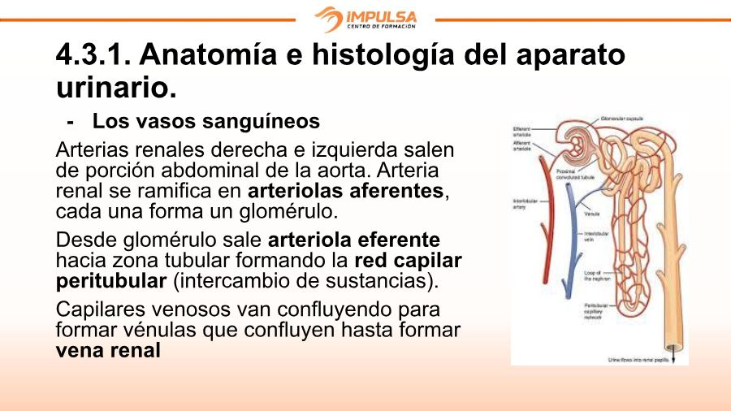
La nefrona y sus vasos (diap. 87)
Entiéndelo: Primero se filtra (glomérulo dentro de la cápsula de Bowman) y luego el líquido recorre unos tubos donde se ajusta qué se queda y qué se va.
Ponte a prueba: Di las partes de la nefrona en orden.
63
La estructura del riñón
Diapositiva 85 · imprescindible
Lo que dice la profe
Estructura de los riñones:
Cápsula renal: externa, formada por tejido conjuntivo fibroso
Zona cortical: amarillenta y granulosa, aquí se encuentran corpúsculos renales, se continúa hacia el interior con las columnas renales.
Zona medular: dividida en pirámides renales. Contiene las asas de Henle y parte del túbulo colector, que desemboca en papila renal, que continúa con cáliz renal menor.
Cada 2 o 3 cálices renales menores convergen para formar un cáliz mayor, todos desembocan en la pelvis renal
Hilio renal: depresión en puntos de entrada y salida.
Hilio renal: La «puerta» del riñón por donde entran y salen vasos y uréter.
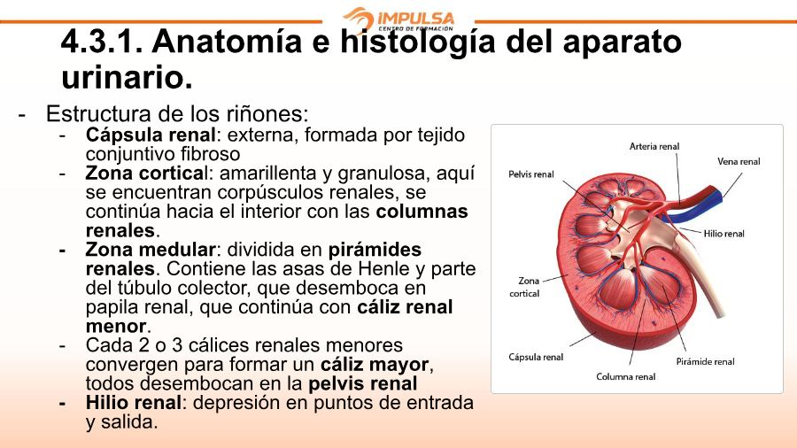
Corte del riñón: corteza, médula y pelvis renal (diap. 85)
Entiéndelo: Fuera, la corteza con los filtros; dentro, la médula con los tubos; y en el centro, los cálices y la pelvis, que recogen la orina.
Ponte a prueba: Describe la estructura del riñón de fuera adentro.
64
Las vías urinarias
Diapositiva 86 · imprescindible
Lo que dice la profe
Las vías urinarias: Conducen orina al exterior del cuerpo. Formadas por uréteres, que salen de cada riñón y conducen orina hasta la vejiga, donde se almacena. Finalmente, uretra conduce orina hasta el meato urinario, donde se expulsa.
Recubiertas de urotelio
Urotelio: El tejido que recubre por dentro las vías urinarias.
Ponte a prueba: Ordena las vías urinarias desde el riñón hasta el exterior.
65
Los vasos sanguíneos del riñón
Diapositiva 87
Lo que dice la profe
Arterias renales derecha e izquierda salen de porción abdominal de la aorta. Arteria renal se ramifica en arteriolas aferentes, cada una forma un glomérulo.
Desde glomérulo sale arteriola eferente hacia zona tubular formando la red capilar peritubular (intercambio de sustancias).
Capilares venosos van confluyendo para formar vénulas que confluyen hasta formar vena renal
Arteriola aferente / eferente: La que entra al glomérulo / la que sale de él.
Entiéndelo: La sangre entra al glomérulo por la aferente, sale por la eferente y rodea los túbulos para el intercambio antes de volver por la vena renal.
Ponte a prueba: Explica el recorrido de la sangre por el riñón desde la aorta hasta la vena renal.
66
Formación de la orina
Diapositiva 89 · imprescindible
Lo que dice la profe
Formación y expulsión de la orina: Sangre llega al glomérulo y se produce filtración del plasma. Sustancias filtradas pasan a cápsula de Bowman, punto de inicio del sistema tubular. Una vez ahí:
Reabsorción: se devuelven sustancias que el organismo necesita (H2O, Glucosa, Aa)
Secreción activa: expulsión de sustancias tóxicas a red tubular.
Aquello que queda en red tubular formará la orina
Reabsorción: Devolver a la sangre lo que el cuerpo necesita.
Secreción activa: Echar a los túbulos sustancias tóxicas.
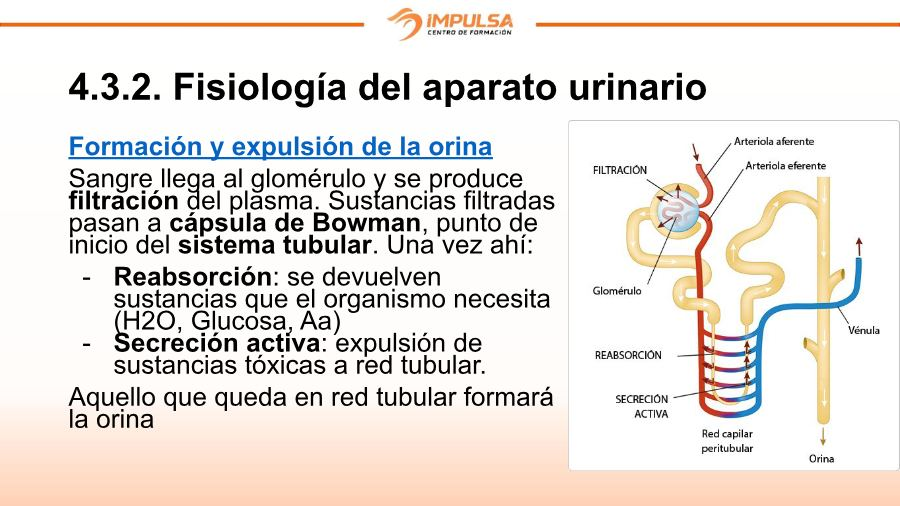
Filtración, reabsorción y secreción en la nefrona (diap. 89)
Entiéndelo: Se filtra mucho, se recupera lo útil (agua, glucosa, aminoácidos), se añaden los tóxicos y lo que queda es orina.
Truco:Filtra, Recupera, Echa: F-R-S.
Ponte a prueba: Explica los 3 procesos de la formación de la orina.
67
La micción
Diapositiva 90
Lo que dice la profe
La micción: Proceso de vaciado de la vejiga urinaria.
Esfínteres uretrales (interno y externo) a la salida de la vejiga se relajan para que orina fluya por uretra.
A partir de 2-4 años micción se vuelve voluntaria, puede inhibirse o precipitarse por control encefálico
Esfínter: Músculo en anillo que abre o cierra un conducto.
Entiéndelo: Dos anillos musculares cierran la vejiga; se relajan para orinar. Desde los 2-4 años lo controlamos.
Truco:2 esfínteres, 2-4 años.
Ponte a prueba: ¿Qué es la micción y cuándo se vuelve voluntaria?
68
Otras funciones: homeostasis
Diapositiva 91 · imprescindible
Lo que dice la profe
Función principal es filtrado de la sangre. Pero además:
Regulación homeostasis (composición constante líquido intersticial y sangre)
Mantener equilibrio hídrico (reabsorción H2O en nefronas)
Mantener equilibrio iónico (retirar más o menos iones)
Mantener equilibrio ácido-base (regular concentración de hidrones en plasma)
Homeostasis: Mantener constante el medio interno.
Entiéndelo: El riñón decide cuánta agua, cuántas sales y cuánto ácido se quedan en el cuerpo.
Truco: Equilibrios: agua, iones, ácido-base.
Ponte a prueba: ¿Qué 3 equilibrios mantiene el riñón dentro de la homeostasis?
69
Renina, EPO y vitamina D
Diapositivas 92 y 93 · imprescindible
Lo que dice la profe
Regulación de la tensión arterial: Secreción de enzima renina ante hipovolemia o hipotensión (Sistema Renina-Angiotensina-Aldosterona)
Regulación de la producción de hemoglobina: Riñón secreta eritropoyetina (EPO) al detectar descenso en circulación de eritrocitos. Principal agente estimulador de eritropoyesis natural.
Formación de la forma activa de la vitamina D: Calcitriol es forma activa, sintetizada en riñones a partir de calcidiol (formado en hígado a partir de vit. D3). Calcitriol regula concentración plasmática de Ca (absorción intestinal)
Renina: Enzima del riñón que pone en marcha la subida de la tensión.
Eritropoyetina (EPO): Hormona del riñón que hace fabricar glóbulos rojos.
Calcitriol: La forma activa de la vitamina D.
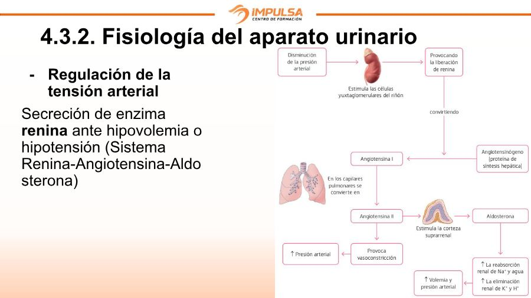
Sistema renina-angiotensina-aldosterona (diap. 92)
Entiéndelo: El riñón también es una glándula: sube la tensión (renina), manda fabricar glóbulos rojos (EPO) y activa la vitamina D (calcio).
Truco:R-E-D: Renina (tensión), EPO (glóbulos rojos), D (calcio).
Ponte a prueba: ¿Qué hacen la renina, la EPO y el calcitriol, y cuándo se liberan?
70
Fisiopatología urinaria y manifestaciones
Diapositivas 94 y 95
Lo que dice la profe
Composición y características de la orina es un indicador de alteraciones en la sangre.
Existen otros procesos patológicos en las vías urinarias: Obstrucciones, Infecciones, Mal funcionamiento de glomérulos..
Cuando aparato urinario no puede desempeñar sus funciones se produce insuficiencia renal
Manifestaciones urinarias
Alteraciones de la cantidad de orina
Alteraciones de la eliminación de orina
Alteraciones de la composición de la orina
Insuficiencia renal: Cuando los riñones no pueden hacer su trabajo.
Entiéndelo: La orina es un espejo de la sangre. Puede cambiar en cuánta hay, en cómo sale o en qué lleva.
Truco:Cantidad, eliminación, composición.
Ponte a prueba: ¿Qué 3 tipos de manifestaciones urinarias hay?
71
Alteraciones de la cantidad de orina
Diapositiva 96 · imprescindible
Lo que dice la profe
Normalmente 1500cm3 de orina al día
Poliuria: más de 2500cm3/día
Oliguria: entre 500 y 1000 cm3/día
Anuria: inferior a 100cm3/día
Poliuria: Orinar demasiado.
Oliguria: Orinar poco.
Anuria: Casi no orinar.
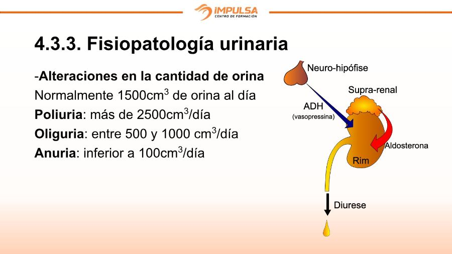
Cantidad de orina y su regulación por ADH y aldosterona (diap. 96)
Entiéndelo: 1 cm³ = 1 ml: lo normal es litro y medio al día.
Ponte a prueba: ¿Cuánta orina es normal al día? Define poliuria, oliguria y anuria con sus cifras.
72
Alteraciones de la eliminación y la composición
Diapositivas 97 y 98 · imprescindible
Lo que dice la profe
Alteraciones de la eliminación de la orina
Polaquiuria: aumento en nº de micciones diarias, sin aumento del volumen
Disuria: molestias y dificultad al orinar
Retención urinaria: acumulación de orina en la vejiga, incapacidad para expulsarla.
Nicturia: aumento de emisión de orina por la noche
Alteraciones de la composición de la orina: Hematuria (presencia de sangre). Análisis de composición (pH..)
Hematuria: Sangre en la orina.
Entiéndelo: Polaquiuria no es orinar más cantidad (eso es poliuria), sino ir más veces.
Truco:Polaquiuria = muchas veces · Poliuria = mucha cantidad · Nicturia = de noche.
Ponte a prueba: Define polaquiuria, disuria, retención urinaria, nicturia y hematuria.
73
Cólico nefrítico
Diapositiva 99 · imprescindible
Lo que dice la profe
Obstrucciones de las vías renales
Cólico nefrítico: cuadro de dolor producido como consecuencia de una obstrucción en el paso de la orina. 3,5% de todas las urgencias hospitalarias.
Causas diversas:
Litiasis, urolitiasis, nefrolitiasis (cálculos)
Coágulos
Tumor
Patología retroperitoneal (fibrosis o linfoma)
Traumatismo renal. Muy grave si incluye rotura de vasos.
Litiasis: Cálculos («piedras»).
Entiéndelo: Algo tapa el paso de la orina (sobre todo una piedra) y duele muchísimo.
Truco: Cólico = obstrucción + dolor; 3,5 % de urgencias.
Ponte a prueba: ¿Qué es el cólico nefrítico y cuáles son sus causas?
74
Infecciones del tracto urinario (ITU)
Diapositivas 100 y 101 · imprescindible
Lo que dice la profe
Infecciones del tracto urinario (ITU): Debidas a la colonización y multiplicación de microorganismos (bacterias) en aparato urinario.
Después de las respiratorias, son las infecciones más frecuentes. Infecciones ascendentes (comienzan en uretra y pasan a vejiga). Si llegan a riñones pueden ser muy graves.
Uretritis y cistitis: necesidad fuerte y persistente de orinar. Ardor al orinar. Puede haber hematuria, orina turbia o con olor fuerte, molestias en área pélvica, dolor de espalda o del costado, fiebre, náuseas, vómitos…
Pielonefritis: microorganismos ascienden hasta parénquima renal. Mayor probabilidad en personas con vagina, en la infancia y en la vejez. Dolor lumbar unilateral, náuseas, vómitos, fiebre y pus en la orina (piuria)
Cistitis: Infección de la vejiga.
Pielonefritis: Infección que llega al riñón.
Piuria: Pus en la orina.
Entiéndelo: Las bacterias suben: uretra → vejiga → riñón. Cuanto más arriba llegan, más grave.
Truco:Uretritis → cistitis → pielonefritis (sube y empeora).
Ponte a prueba: ¿Qué es una ITU y por qué se dice que es ascendente? Diferencia la cistitis de la pielonefritis.
75
Síndrome nefrítico
Diapositiva 102 · imprescindible
Lo que dice la profe
Mal funcionamiento de los glomérulos renales
Síndrome nefrítico: Glomerulonefritis, triada de signos: hipertensión arterial, edema y hematuria. Además: polaquiuria, disuria, malestar.
Según aumenta deterioro síntomas más generales, sustancias tóxicas se quedarán en la sangre.
Causas: infecciones (pielonefritis), enfermedades autoinmunes, trastornos metabólicos y traumatismos.
Glomerulonefritis: Inflamación de los glomérulos.
Entiéndelo: Los glomérulos se inflaman: sube la tensión, se retiene líquido y sale sangre en la orina.
Ponte a prueba: ¿Cuál es la tríada del síndrome nefrítico y cuáles son sus causas?
76
Síndrome nefrótico
Diapositiva 103 · imprescindible
Lo que dice la profe
Síndrome nefrótico: Aumento permeabilidad glomérulos renales. Sustancias que no lo atravesarían lo hacen: proteinuria, hipoalbuminemia, hiperlipidemia y edemas.
Causas por diversos trastornos renales, también fruto de glomerulonefritis. Otra causa es que sea secundario a diabetes mellitus, lupus eritematoso sistémico, infecciones víricas o consumo de medicamentos
Proteinuria: Proteínas en la orina.
Hipoalbuminemia: Poca albúmina en la sangre.
Entiéndelo: El filtro se vuelve un colador: se escapan las proteínas por la orina y, al faltar en la sangre, se forman edemas.
Truco: Nefrótico = proteínas fuera (o de cOlador).
Ponte a prueba: ¿Qué ocurre en el síndrome nefrótico y cuáles son sus 4 signos?
77
Insuficiencia renal
Diapositiva 104 · imprescindible
Lo que dice la profe
Insuficiencia renal: Pérdida de la capacidad de los riñones para eliminar residuos y ayudar con el equilibrio de líquidos y electrolitos en el cuerpo.
Provoca alteraciones del flujo urinario, y manifestaciones muy diversas debidas a acumulación de productos nitrogenados, desequilibrio hidroelectrolítico y ácido-base.
Signos habituales: hipertensión arterial, edemas, anemia (déficit de EPO)
Entiéndelo: Si el riñón falla, se acumulan desechos, se descontrolan agua y sales… y como no fabrica EPO, aparece anemia.
Truco: Signos: tensión alta, hinchazón, anemia.
Ponte a prueba: ¿Qué es la insuficiencia renal y cuáles son sus signos habituales? ¿Por qué da anemia?
78
Insuficiencia renal aguda y crónica
Diapositivas 105 y 106 · imprescindible
Lo que dice la profe
Insuficiencia renal aguda: Puede originarse por una necrosis tubular aguda, una enfermedad renal autoinmune, ⬇flujo por hipotensión, coagulación en vasos renales, infecciones, obstrucción de vías urinarias o complicaciones en embarazo. Pérdida rápida de función renal: atención de urgencia
Insuficiencia renal crónica: Causas comunes diabetes e hipertensión arterial. Asintomática en etapas iniciales, o síntomas inespecíficos. Síntomas pueden ser piel anormalmente oscura o clara, dolor óseo, calambres, mal aliento, sed excesiva, susceptibilidad a hematomas o sangrado, sangre en las heces, impotencia, problemas de sueño, edemas… En etapa final riñones no pueden eliminar desechos. Únicas opciones son diálisis o trasplante de riñón
Diálisis: Tratamiento que limpia la sangre con una máquina cuando el riñón no puede.
Entiéndelo: La aguda es de golpe (urgencia); la crónica avanza despacio y en silencio, sobre todo por diabetes e hipertensión, hasta necesitar diálisis o trasplante.
Ponte a prueba: Compara la insuficiencia renal aguda y la crónica: causas, evolución y tratamiento final.
Preguntas rápidas
Piensa la respuesta antes de abrir.
¿Marcapasos del corazón?
El nódulo sinusal, en la aurícula derecha.
¿Válvula entre AI y VI?
La mitral.
¿Capa más gruesa de los vasos?
La media.
¿Fases de la hemostasia?
Vasoconstricción, agregado plaquetario y coágulo.
¿Enzima que forma la fibrina?
La trombina.
¿Principal inhibidor de la coagulación?
La antitrombina III.
¿Qué deshace el coágulo?
La plasmina.
¿Placa en la arteria?
Ateroma (aterosclerosis).
¿Prueba de sangre para trombos?
Dímero D.
¿Infarto?
Necrosis por falta de riego de más de 20 minutos.
¿Asesino silencioso?
La hipertensión arterial.
¿Unidad funcional del riñón?
La nefrona.
¿Hormona del riñón que fabrica glóbulos rojos?
La eritropoyetina (EPO).
¿Anuria?
Menos de 100 cm³ de orina al día.
¿Tríada del síndrome nefrítico?
Hipertensión, edema y hematuria.
Preguntas de desarrollo
Hemostasia y cascada de coagulación
Diapositivas 28 a 41
Explica la hemostasia y la cascada de coagulación.
Ver la respuesta modelo
La hemostasia detiene una hemorragia en 3 fases: vasoconstricción local, agregado plaquetario y coágulo. La coagulación transforma el fibrinógeno (soluble) en fibrina (insoluble) gracias a la trombina. Se activa por la vía intrínseca (lesión vascular) o la extrínseca (lesión tisular), que confluyen en la vía común: X → II (trombina) → I (fibrina) → XIII la insolubiliza. Frenos: flujo normal, hígado, proteína C y S y antitrombina III (potenciada por heparina). Después, la plasmina deshace la fibrina (fibrinólisis).
Trombosis y embolia
Diapositivas 50 a 57
Explica la trombosis y la embolia: definición, causas y tipos.
Ver la respuesta modelo
Trombosis: coágulo dentro de un vaso. Causas: aterosclerosis, alteraciones de la coagulación o de la sangre, flujos en torbellino, lesiones del endotelio. Según oclusión: ocluyente (total) o mural (parcial). Según ubicación: por precipitación (blancos, arterias, plaquetas), por coagulación (rojos, venas, más fibrina) e hialina (vénulas y capilares). Se detecta con el dímero D.
Embolia: oclusión por un émbolo que circula y se encaja en un vaso pequeño: tromboembolia (la mayoría), grasa, aérea, séptica, tisular, de cuerpo extraño y de líquido amniótico.
Accidente vascular cerebral
Diapositivas 58 a 62
¿Qué es un AVC? Tipos, síntomas y factores de riesgo.
Ver la respuesta modelo
Interrupción del riego en una parte del cerebro. Isquémicos (80 %): extravasculares (vasoconstricción) o intravasculares: aterotrombótico (55 %) y embólico. Hemorrágicos (20 %): pico hipertensivo o aneurisma congénito.
Síntomas: pérdida de fuerza en un lado, dificultad para hablar (disartria), pérdida de equilibrio, mareo o dolor de cabeza brusco, pérdida de visión. Riesgo no modificable: edad, sexo, raza, antecedentes; modificable: HTA, tabaco, grasas, diabetes, alcohol, obesidad, sedentarismo…
Angina de pecho e infarto
Diapositivas 65 a 67
Compara la angina de pecho y el infarto agudo de miocardio.
Ver la respuesta modelo
Las dos son cardiopatías isquémicas por obstrucción coronaria, casi siempre por ateromas. La angina: dolor torácico de corta duración, sin lesiones permanentes, puede evolucionar a infarto. El infarto: dolor más intenso por necrosis del miocardio cuando la falta de riego dura más de 20 minutos; causa habitual, un trombo en una coronaria.
La nefrona y la orina
Diapositivas 81 a 89
Explica la nefrona y la formación de la orina.
Ver la respuesta modelo
La nefrona es la unidad estructural y funcional del riñón (más de un millón por riñón): corpúsculo renal (glomérulo + cápsula de Bowman) y sistema tubular (túbulo proximal, asa de Henle, túbulo distal y colector). La sangre se filtra en el glomérulo; en los túbulos hay reabsorción (agua, glucosa, aminoácidos) y secreción activa (tóxicos). Lo que queda es la orina (unos 1500 cm³ al día).
Respuestas modelo de Enfoque, hechas solo con lo que dicen las diapositivas.
Tarjetas
Dilo antes de abrir. Las que falles, repítelas al final.
¿Qué forma el aparato cardiovascular y dónde está el corazón?
Aparato cardiovascular: Corazón + sistema vascular + sangre
El corazón: Órgano que se contrae y se relaja alternativamente para impulsar la sangre por todo el organismo.
En mediastino, apoyado en el diafragma
Di las 3 capas de la pared del corazón y qué hace cada una.
Pericardio: membrana serosa, envuelve corazón. 2 capas con líquido lubricante entre ellas. Mantiene corazón en posición, evita que se llene demasiado de sangre, lo protege de infecciones.
Miocardio: músculo cardiaco. Fibras musculares + células de conducción eléctrica.
Endocardio: membrana que recubre las paredes internas del corazón
¿De dónde recibe sangre cada aurícula y hacia dónde la impulsa cada ventrículo?
Aurículas
Derecha: recibe sangre desde las venas cavas.
Izquierda: recibe de los pulmones a través de venas pulmonares
Ventrículos
Derecho: recibe de aurícula derecha, impulsa hacia arteria pulmonar
Izquierdo: recibe de aurícula izquierda, impulsa a arteria aorta
Di las 4 válvulas del corazón y dónde está cada una.
Válvulas en salida de aurículas y ventrículos
Lado derecho
Válvula tricúspide: AD/VD
Válvula pulmonar: salida VD
Lado izquierdo
Válvula mitral: AI/VI
Válvula aórtica: salida VI
¿Qué arterias irrigan el corazón, de dónde salen y adónde llevan la sangre las venas coronarias?
Irrigación del corazón mediante arterias coronarias, nacen en la aorta y se ramifican. Venas coronarias recogen sangre desoxigenada y la llevan a la AD.
¿Qué es el ciclo cardiaco y de qué 4 factores depende la sangre expulsada por latido?
Ciclo cardiaco: fenómenos físicos que suceden en las cavidades cardiacas y en los grandes vasos durante las fases de contracción y relajación del corazón.
Cantidad de sangre expulsada/latido depende de:
Contractilidad: fuerza del miocardio
Precarga: cantidad de sangre que recibe el corazón a través de venas cavas
Poscarga: resistencia a salir del VI
Frecuencia cardiaca: pulsaciones/minuto
¿Cómo define la diapositiva: «Ciclo cardiaco»?
«Fenómenos físicos que suceden en las cavidades cardiacas y en los grandes vasos durante las fases de contracción y relajación del corazón. (diap. 9)»
¿Qué válvulas se abren y cuáles se cierran en la sístole y en la diástole?
Fases del ciclo cardiaco
Sístole: contracción de ventrículos. Apertura válvulas pulmonar y aórtica. Cierre válvulas tricúspide y mitral
Diástole: Ventrículos casi vacíos, P se reduce→apertura válvulas tricúspide y mitral. Cierre pulmonar y aórtica. Ventrículos se relajan, aurículas se contraen→sangre pasa de aurículas a ventrículos
Explica los 4 pasos del sistema de conducción eléctrica del corazón.
Corazón posee un sistema intrínseco de conducción eléctrica formado por fibras musculares modificadas.
Impulso se genera en Nódulo sinusal (AD) → marcapasos
Impulso se extiende por aurículas y provoca su contracción
Impulso llega al nódulo auriculoventricular
Impulso se extiende por los ventrículos y provoca contracción (sístole)
¿Qué efecto tienen el simpático y el parasimpático sobre la frecuencia cardiaca?
Nódulo sinusal recibe inervación simpática y parasimpática
Simpática aumenta frecuencia
Parasimpática reduce frecuencia
Diferencia arterias, venas y capilares.
El sistema vascular: Conjunto de vasos sanguíneos del organismo
Arterias: salen del corazón y se ramifican hasta arteriolas. Paredes muy fuertes
Venas: conducen sangre hacia el corazón. Las más pequeñas se llaman vénulas. Paredes delgadas (baja P). Presentan válvulas semilunares (evitan retroceso de la sangre)
Capilares: vasos de pequeño calibre, en ellos ocurre intercambio de sustancias. Paredes muy finas y permeables
Di las 3 capas de la pared de arterias y venas y cuál es más gruesa en cada tipo de vaso.
Paredes de arterias y venas presentan 3 capas concéntricas:
Íntima: endotelio plano, en contacto con la sangre, evita coagulación
Media: capa más gruesa, células musculares lisas y tejido conjuntivo. Mayor en arterias que en venas
Adventicia: externa. Fibras elásticas y de colágeno. Más gruesa en venas que arterias
Explica el circuito menor y el circuito mayor.
Sistema cerrado, sangre fluye de forma continua por el organismo impulsada por corazón. Volemia ha de ser constante.
Circuito menor o pulmonar: sangre del corazón a los pulmones y la devuelve al corazón oxigenada
Circuito mayor o sistémico: sangre oxigenada desde el corazón hasta el resto del organismo y de vuelta desoxigenada
¿Qué es la linfa? Di las 3 funciones del sistema linfático.
Intercambio de sustancias en los capilares. En espacio intercelular queda filtrado de plasma procedente de capilares: linfa.
Capilares linfáticos captan linfa y convergen para formar vasos linfáticos, de ahí a ganglios linfáticos, se filtra la linfa y se devuelve al sistema vascular
Sistema de circulación abierto, llega a todos los tejidos. 3 funciones:
Recolectar y devolver líquido intersticial a la sangre
Absorber nutrientes del aparato digestivo y conducirlos a venas subclavias
Defender organismo de agentes patógenos: filtrado de la sangre
¿Cómo vuelve la sangre al corazón por las venas?
Impulso del corazón no llega a las venas, pero hace que la sangre de las arterias avance y “empuje” a la de las venas. Además, sístole del corazón tiene efecto succionador para la sangre de las venas cavas y pulmonares.
¿Qué es la sangre? ¿Qué estudia la hemodinámica y cuáles son sus 2 parámetros?
La sangre: Tejido conectivo con ME líquida (plasma) y células sanguíneas (eritrocitos y leucocitos) y fragmentos celulares (plaquetas).
Hemodinámica: Estudio de la dinámica de la sangre en el interior de los vasos. 2 parámetros hemodinámicos esenciales:
Tensión arterial
Volemia
¿Cómo define la diapositiva: «Hemodinámica»?
«Estudio de la dinámica de la sangre en el interior de los vasos. (diap. 24)»
¿Qué es la tensión arterial? Di los valores normales de la sistólica y la diastólica.
Presión que ejerce la sangre impulsada por el corazón sobre las paredes de las arterias. Oscila a lo largo del ciclo cardíaco.
Tensión arterial máxima o sistólica (TAS): sangre empujada hacia las arterias aumenta la presión en ellas. Valor normal entre 120 y 140 mmHg
Tensión arterial mínima o diastólica (TAD): diástole y cierre de válvula aórtica. Valor normal entre 60 y 90 mmHg
¿Cómo define la diapositiva: «Tensión arterial»?
«Presión que ejerce la sangre impulsada por el corazón sobre las paredes de las arterias. (diap. 25)»
¿Qué 3 sistemas regulan la presión sanguínea y cómo?
Tensión varía de una persona a otra en función de edad, nerviosismo, ejercicio…
Presión sanguínea regulada por:
SN vegetativo, actúa a nivel de gasto cardíaco, fr cardiaca, fuerza de contracción y resistencia periférica
Sistema endocrino: hormonas que aumentan o reducen la volemia (Antidiurética y aldosterona)
Aparato urinario: regulación de la cantidad de iones y H2O que se retiran de la sangre y se eliminan con la orina
¿Qué es la volemia, cuánto vale y qué pasa si sube o si baja?
Volemia: Volumen total de sangre circulante (5-6 litros en adultos).
Distintos mecanismos para mantenerla constante (sed, aumento o reducción de reabsorción de H2O).
Aumento de volemia = aumento de TA, puede llevar a edema, rotura de vasos pequeños…
Hipovolemia →Hipotensión puede comprometer la circulación
¿Qué es la hemostasia? Explica sus 3 fases.
Conjunto de procesos fisiológicos que tiene por objetivo detener una hemorragia. Ocurre en 3 fases:
Vasoconstricción local: rotura del endotelio detectada por plaquetas, liberan sustancias que provocan vasoconstricción. Se consigue reducir el flujo de sangre que llega a la zona.
Formación de agregado plaquetario: estrechamiento del vaso por vasoconstricción favorece aglomeración de las plaquetas, agregado tapona zona lesionada.
Formación del coágulo: agregado se transforma en coágulo (coagulación)
¿Cómo define la diapositiva: «Hemostasia»?
«Conjunto de procesos fisiológicos que tiene por objetivo detener una hemorragia. (diap. 28)»
¿En qué consiste la coagulación y qué enzima la hace posible?
La coagulación–Cascada de coagulación: Transformación del fibrinógeno (soluble) en fibrina (insoluble), precipita en forma de filamentos que se entrelazan y atrapan elementos celulares hasta formar el coágulo.
Para la transformación se requiere activación del enzima trombina por parte de los factores de coagulación
Diferencia la vía intrínseca y la extrínseca de la coagulación.
Cascada de coagulación mediante 2 mecanismos:
Vía intrínseca: activada por lesión vascular. Endotelio es antitrombogénico, pero el tejido tras él es trombogénico. Al romperse, plaquetas se fijarán activando coagulación
Vía extrínseca: lesión tisular libera factor de coagulación que desencadena cascada de coagulación.
Las dos tienen una vía común
Ordena los 4 pasos de la vía común de la coagulación.
Cascada de coagulación: vía común
Activación factor X
Factor Xa activa factor II (protrombina→trombina)
Factor IIa activa Factor I. (fibrinógeno→fibrina soluble)
Factor XIIIa insolubiliza Ia→precipitación
¿Cómo se clasifican los factores de coagulación según su lugar de síntesis?
Factores de coagulación: Según su lugar de síntesis
Plasmáticos: VII, IX, X, XI, XII y XIII, precalicreína (PK) y quininógeno de alto peso molecular
Hepáticos: I, II, V, VII, VIII-C, IX, X, XI, LXIII, PK
Tisulares: tromboplastina tisular, colágeno, parte del factor VIII
Plaquetarios: FP3
¿Qué factores dependen de la vitamina K y qué les pasa si falta?
Según su dependencia o sensibilidad:
Dependientes de vitamina K: II, VII, IX y X. Pierden su actividad si hay déficit de vitamina K o si hay acción antagonista de anticoagulantes orales.
Factores sensibles a la trombina: I, II, V, VII, VIII y XIII
Di los 3 mecanismos que regulan o frenan la coagulación.
Factores reguladores o inhibidores de la coagulación:
Flujo sanguíneo normal: arrastra parte de los factores activados, diluyendo su acción.
Hígado: actúa como filtro, retirando de la sangre en circulación los factores activados e inactivándolos.
Proteasas: que degradan o inhiben factores: Proteína C, Proteína S, Antitrombina III
¿Qué hacen la proteína C, la proteína S y la antitrombina III? ¿Qué sustancia potencia la AT III?
Proteína C: proteína plasmática de síntesis hepática, dependiente de vit. K. Se activa en presencia de trombina y degrada factores Va y VIIIa, limitando proyección de cascada.
Proteína S: plasmática hepática, cofactor de proteína C
Antitrombina III (AT III): glucoproteína sintetizada en el hígado. No dependiente de vitamina K. Principal inhibidora de la coagulación. Inhibe irreversiblemente varios factores: trombina, calicreína, IXa, Xa, XIa y XIIa. Su acción se ve aumentada por la heparina, que se encuentra en el endotelio de vasos sanguíneos y en gránulos de mastocitos
Explica cómo se repara el tejido después de formarse el coágulo.
Tras establecimiento del coágulo, es necesario reparar tejidos lesionados mediante cicatrización.
Coágulo hace de base, células migran y se fijan a él. Principalmente neutrófilos (limpian) y macrófagos (inducen reparación)
Células endoteliales realizan angiogénesis (nuevos vasos son muy permeables, se forman edemas)
Fibroblastos proliferan y aportan colágeno que rellena la zona en 5-7 días
Células basales del epitelio proliferan bajo costra del coágulo y después originan nuevo epitelio.
Tras un mes, cicatriz formada por tejido conjuntivo acelular recubierto de epidermis
¿Qué es la fibrinólisis, qué enzima la hace y cómo se activa?
Degradación de la fibrina es catalizada por plasmina y sus restos son captados por macrófagos. Plasmina formada por activación de plasminógeno, sintetizado en el hígado. Activación por:
Factores intrínsecos (la propia cascada)
Factores extrínsecos: activador tisular del plasminógeno (t-PA), un enzima sintetizado en endotelio vascular.
¿Qué es la isquemia, qué provoca y dónde es más grave?
Patologías en vasos, corazón y circulación.
Isquemia: reducción del flujo sanguíneo en una zona del organismo, provocando que sus células no reciban oxígeno y sufran lesiones graves, incluso irreversibles.
Isquemia lleva a hipoxia de los tejidos, consecuencias más graves en corazón y cerebro.
¿Cómo define la diapositiva: «Isquemia»?
«Reducción del flujo sanguíneo en una zona del organismo, provocando que sus células no reciban oxígeno y sufran lesiones graves, incluso irreversibles. (diap. 42)»
Clasifica las patologías vasculares.
Enfermedades vasculares en arterias o venas.
Patologías vasculares por afectación de vasos: Aneurismas, Varices
¿Qué es un aneurisma, dónde suele aparecer, cuáles son sus factores de riesgo y su tratamiento?
Dilatación patológica de un segmento de un vaso sanguíneo, habitualmente a nivel arterial (aorta).
Factores de riesgo: varones de 60 años, hipertensión, fumadores, factores de aterosclerosis.
Síntomas y evolución dependen de localización. La mayoría asintomáticos, aunque compresión de tejidos puede provocar dolor torácico, tos, ronquera o disfagia
Tratamiento: Según zona afectada. Medidas para controlar hipertensión + vigilancia periódica cada 6 meses. En caso de empeoramiento: tratamiento quirúrgico con implantación de injerto.
¿Cómo define la diapositiva: «Aneurisma»?
«Dilatación patológica de un segmento de un vaso sanguíneo, habitualmente a nivel arterial (diap. 44)»
¿Qué son las varices y por qué se producen? Di factores de riesgo y tratamientos.
Varices: Dilataciones venosas, generalmente en extremidades inferiores.
Alteración en válvulas semilunares dificulta retorno venoso, sangre se acumula y venas se dilatan y se vuelven tortuosas.
Tratamientos: Medias de compresión, escleroterapia, terapia con láser, flebectomía…
¿Qué es la aterosclerosis, de qué están hechas las placas, qué riesgos tiene y cómo se previene?
Aterosclerosis: Depósito de placas (ateromas) en la pared interna de las arterias. Placas compuestas por grasas, colesterol, Ca y otras sustancias. Con el tiempo se endurecen y estrechan luz arterial. Afectan a cualquier arteria, según zona afectada, distintas enfermedades
Además de reducción de flujo, existe riesgo de que la placa se suelte y pase al flujo sanguíneo, pudiendo llegar a bloquear vasos más pequeños.
Prevención clave: Dieta sana, baja en grasas saturadas, ejercicio regular. Controlar hipertensión y diabetes
¿Qué es una trombosis? Di sus causas.
Trombosis: Formación de un coágulo (trombo) en el interior de un vaso sanguíneo. Muchas causas posibles:
Alteración en vasos por aterosclerosis, ruptura traumática o alteración del flujo sanguíneo
Alteración en factores de coagulación o en anticoagulantes
Alteraciones en composición de la sangre (⬇fracción líquida)
Alteraciones vasculares que provocan flujos en torbellino (estenosis mitral)
Lesiones en endotelio.
Clasifica las trombosis según el grado de oclusión.
Clasificación según nivel de oclusión y lugar en que se originan:
Según grado de oclusión: Ocluyente, Mural
Según ubicación: Por precipitación, Por coagulación, Hialina
Según grado de oclusión
Ocluyente: obstrucción total
Mural: obstrucción parcial
Compara la trombosis por precipitación, por coagulación y hialina.
Trombosis por precipitación (trombos blancos). Carácter mural, principalmente en arterias o corazón. Causa más común es presencia de ateromas. Trombo compuesto por plaquetas, escasa fibrina y hematíes.
Trombosis por coagulación (trombos rojos). En venas tras enlentecimiento de circulación. Oclusivos. Trombo formado por mezcla de fibrina y plaquetas (más fibrina)
Trombosis hialina: en vénulas o capilares. Provocadas por el desprendimiento de plaquetas y fibrinas
¿Por qué se dan anticoagulantes de forma preventiva y qué se mide en sangre para detectar trastornos de coagulación?
Cualquier trombosis es grave (impide irrigación) y con consecuencias diversas.
Trombos no provocan síntomas hasta que ocurre el daño→ cuando algo puede favorecer formación de trombos se administran anticoagulantes preventivamente.
Detección de trastornos en coagulación mediante análisis de sangre (detección de dímero D)
¿Qué es una embolia y en qué se diferencia de una trombosis?
Embolias: Oclusión parcial o total de un vaso debido a una partícula extraña circulante (émbolo) que se encaja en un vaso de pequeño calibre.
Di los tipos de embolia según el émbolo. ¿Cuál es la más frecuente?
Según la naturaleza del émbolo distinguimos:
Tromboembolia (la mayoría)
Embolia grasa: infiltración de tejido adiposo en vasos tras fractura ósea.
Embolia aérea o gaseosa: en buzos, cirugías en tórax o cuello, o heridas profundas en tórax.
Embolia séptica: pus, puede contener bacterias
Embolia tisular: fragmentos de tejido
Embolia de cuerpo extraño: materiales extraños al organismo.
Embolia de líquido amniótico: células fetales, cabello, etc. que entran en torrente de la madre
¿Qué es un AVC y cuáles son sus 2 tipos?
Accidentes vasculares cerebrales (AVC o ictus): Interrupciones del riego sanguíneo en alguna parte del cerebro. Puede deberse a estenosis u obstrucción (AVC isquémicos) o rotura de vaso (AVC hemorrágicos)
¿Qué porcentaje de los AVC son isquémicos y cómo se clasifican?
AVC isquémicos constituyen el 80%:
De origen extravascular: estenosis de arterias debida a vasoconstricción (por disminución del gasto cardiaco o hipotensión arterial)
De origen intravascular: émbolo en arteria.
Aterotrombótico: 55%. Trombo en arterias que irrigan el cerebro→isquemia. Ateromas favorecen.
Embólico: émbolo llega por la circulación. Causas diversas: cardiopatías, fracturas, tumores, fármacos…
¿Qué es un AVC hemorrágico, qué porcentaje supone y qué lo causa?
AVC hemorrágicos: hemorragia cerebral o apoplejía (20% de los AVC). Causado por pico hipertensivo o aneurisma congénito (aparte de traumas)
Di 5 síntomas de un AVC.
Síntomas AVC muy variados (según área cerebral).
Pérdida de fuerza en 1 brazo o pierna, o cara (hemiparesia/hemiplejia)
Dificultad para expresarse, entender o lenguaje ininteligible (disartria)
Dificultad al caminar, pérdida de equilibrio o coordinación
Mareos, dolor de cabeza brusco..
Pérdida de visión en 1 o ambos ojos
Di los factores de riesgo del AVC no modificables y 5 modificables.
Factores de riesgo AVC:
No modificables: edad, sexo, raza, antecedentes familiares
Modificables: hipertensión arterial, tabaco, consumo de grasas, diabetes, enfermedad cardíaca, alcohol, obesidad, vida sedentaria, anticonceptivos orales
Di los 3 grupos de patologías cardiacas.
Arritmias
Cardiopatías isquémicas
Valvulopatías
Trastornos hemodinámicos (hiper e hipotensión) también afectan a actividad del corazón.
¿Qué es una arritmia? Di sus 3 trastornos básicos con sus cifras.
Arritmias: Trastorno en los latidos o en el ritmo del corazón. Pueden ser signo de distintos trastornos o consecuencia de un mal funcionamiento del sistema eléctrico del corazón.
3 trastornos básicos:
Taquicardia: más de 100 latidos/minuto
Bradicardia: menos de 60 latidos/minuto
Patrón irregular
¿Qué es una cardiopatía isquémica y qué es el síndrome coronario agudo?
Cardiopatías isquémicas: Obstrucción en arterias coronarias o en sus ramificaciones provocará isquemia, que causará hipoxia del miocardio afectada.
Síndrome coronario agudo (SCA): conjunto de síntomas clínicos compatibles con cardiopatía isquémica aguda.
¿Qué es la angina de pecho, cuánto dura y deja lesiones?
Patologías más comunes que causan cardiopatía isquémica:
Angor inestable o angina de pecho: dolor torácico debido a isquemia de miocardio. Dolor suele ser de corta duración, no causa lesiones permanentes, puede evolucionar hacia infarto agudo de miocardio. Suele deberse a presencia de ateromas en vasos coronarios.
¿Qué es un infarto agudo de miocardio, cuánto dura la falta de riego y cuál es su causa más habitual?
Infarto agudo de miocardio: cuadro de dolor más intenso debido a necrosis de tejido cardiaco por falta de irrigación, que se mantiene más de 20 minutos. Causa más habitual es un trombo que bloquea circulación de arteria coronaria, se suele formar por ateromas.
¿Qué es una valvulopatía y cuáles son sus causas habituales?
Valvulopatías: Alteraciones en 1 ó varias de las válvulas del corazón, que impiden apertura o cierre completo, quitando efectividad al bombeo.
Causas habituales: envejecimiento (endurecimiento y calcificación valvular), endocarditis infecciosa (bacterias se fijan al endocardio de una válvula y comienzan a multiplicarse→vegetaciones)
¿Con qué parámetro están muy ligadas las alteraciones de la tensión arterial?
Alteraciones de la tensión arterial: Pueden impedir funcionamiento normal del aparato cardiovascular. Altamente ligadas a volemia. Cuando tensión supera márgenes de normalidad o se mantienen valores elevados de forma continuada las consecuencias pueden ser graves.
¿Por qué la HTA es el «asesino silencioso»? Diferencia la primaria de la secundaria.
Principal factor de riesgo cardiovascular, “asesino silencioso” (asintomático)
Síntomas en hipertensión maligna: dolores de cabeza, confusión, cambios en la visión, sangrado nasal, mareos, náuseas y vómitos.
90% de los casos no hay causa concreta que desencadene HTA, por lo que se llama hipertensión primaria. Factores predisponentes: edad avanzada, antecedentes familiares, diabetes, colesterol, obesidad.
En un porcentaje más pequeño HTA es secundaria a consumo de alcohol, fármacos, enfermedades renales→Hipertensión secundaria.
Reconocimiento precoz esencial, si ya existe lesión se pueden desarrollar ictus, trombosis cerebrales, infartos o insuficiencia renal.
Tratamiento:
Hábitos de vida saludables: dieta mediterránea, control peso, no fumar
Uso de fármacos
¿Qué es el shock hipovolémico, qué lo causa y cuáles son sus síntomas?
Hipotensión arterial: Presión muy baja. y falta suministro de sangre a órganos y tejidos persona entra en shock. Generalmente por pérdida de líquidos (hemorragia, deshidratación, quemaduras, diarreas…) →Shock hipovolémico.
Síntomas: piel fría y sudada, pulso débil pero acelerado, respiración irregular, boca seca, pupilas dilatadas
¿Qué es un edema y por qué se produce? ¿Cómo se reparte el agua del cuerpo?
Edemas: Acumulación de líquido en el espacio intercelular o intersticial o en cavidades del organismo.
Cantidad de líquido intersticial regulada por homeostasis.
H2O supone 60% de nuestro peso: 40% intracelular, 20% intercelular.
Sistema linfático recoge el plasma intersticial, edema se produce cuando se produce una secreción excesiva de líquido o cuando no se recupera de forma correcta
¿Cómo define la diapositiva: «Edema»?
«Acumulación de líquido en el espacio intercelular o intersticial o en cavidades del organismo. (diap. 73)»
Di los tipos de edema según su localización. ¿Qué es la ascitis?
Ascitis: Acúmulo de líquido en la cavidad peritoneal o abdominal.
Hidrotórax o derrame pleural. Acúmulo de líquido en la cavidad pleural o torácica.
Hidropericardio o derrame pericárdico. Acúmulo de líquido en la cavidad pericárdica.
Hidrocefalia. Dilatación de los ventrículos cerebrales por acumulación de líquido cefalorraquídeo.
Edema pulmonar. Acúmulo de líquido (trasudado) en el espacio intersticial del parénquima pulmonar.
Edemas cutáneos comunes. Se observan en picaduras de mosquito, araña, avispa o abeja, y contacto de la piel con ciertas plantas, como la ortiga.
Di las 4 causas de los edemas con un ejemplo de cada una.
Aumento de la presión de la sangre a nivel capilar: resultado de insuficiencia cardíaca, hipervolemia, obstrucción venosa o varices
Aumento de la permeabilidad de los capilares: inflamación o daño vascular (quemaduras, traumatismos)
Disminución proteínas plasmáticas: plasma sale de los vasos para equilibrar [ ]. En cirrosis hepática, malnutrición, quemaduras y síndrome nefrótico.
Bloqueo del drenaje linfático: traumatismos, inflamación vías linfáticas y otras causas.
Diferencia el edema generalizado del localizado y di sus causas.
Generalizado: hinchazón difusa de todos los tejidos y órganos del cuerpo. Causas más habituales: insuficiencia cardiaca, síndrome nefrótico e insuficiencia hepática
Edema localizado: en una parte concreta del cuerpo. Suele deberse a disminución de circulación linfática y aumento de presión venosa en zona afectada. También a un aumento local de la permeabilidad capilar causado por una inflamación
¿Qué es la CID y cuáles son sus causas comunes?
Existen trastornos que provocan una coagulación generalizada: coagulación intravascular diseminada (CID).
CID se produce por activación y estimulación excesiva del sistema de la coagulación.
¿Qué factores faltan en la hemofilia y cómo se transmite? ¿Para qué es esencial la vitamina K?
Alteraciones propias de la coagulación→ trastornos por déficit:
Deficiencia de vitamina K: esencial para formación de protrombina, factores VII, IX, X y proteína C.
Hemofilia: deficiencias factores VIII y IX. Transmitida por el cromosoma X.
¿Qué es la trombocitopenia, por qué se produce y qué es la púrpura trombocitopénica?
Trombocitopenia: deficiencia de plaquetas en sistema vascular. producción insuficiente, descomposición en el torrente o incremento de descomposición en el bazo o hígado.
Personas con trombocitopenia tienden a sangrar a partir de vasos de pequeño calibre o capilares→pequeñas hemorragias puntiformes en los tejidos de todo el cuerpo: púrpura trombocitopénica.
¿Qué hace el aparato urinario? ¿Qué es la nefrona y cuántas tiene cada riñón?
Aparato urinario relacionado con aparatos reproductivos. Desde punto de vista fisiológico, relacionado con circulatorio.
Aparato urinario filtra la sangre, la libera de sustancias de desecho y participa activamente en el mantenimiento de la volemia
Riñones: Encargados de la filtración de sangre y formación de orina.
La nefrona es la unidad estructural y funcional del riñón. Cada riñón está constituido por más de un millón de nefronas. Cada una de ellas forma orina, que conduce hacia las vías urinarias.
¿Cómo define la diapositiva: «Nefrona»?
«La nefrona es la unidad estructural y funcional del riñón. (diap. 82)»
Di las partes de la nefrona en orden.
Nefrona constituida por:
Corpúsculo renal o de Malpighi
Glomérulo (ovillo de capilares a partir de arteria renal)
Cápsula de Bowman rodeando glomérulo.
Sistema tubular continuación de la cápsula.
Túbulo contorneado proximal
Asa de Henle
Túbulo contorneado distal, desemboca en tubo colector que acaba en papila renal
Describe la estructura del riñón de fuera adentro.
Estructura de los riñones:
Cápsula renal: externa, formada por tejido conjuntivo fibroso
Zona cortical: amarillenta y granulosa, aquí se encuentran corpúsculos renales, se continúa hacia el interior con las columnas renales.
Zona medular: dividida en pirámides renales. Contiene las asas de Henle y parte del túbulo colector, que desemboca en papila renal, que continúa con cáliz renal menor.
Cada 2 o 3 cálices renales menores convergen para formar un cáliz mayor, todos desembocan en la pelvis renal
Hilio renal: depresión en puntos de entrada y salida.
Ordena las vías urinarias desde el riñón hasta el exterior.
Las vías urinarias: Conducen orina al exterior del cuerpo. Formadas por uréteres, que salen de cada riñón y conducen orina hasta la vejiga, donde se almacena. Finalmente, uretra conduce orina hasta el meato urinario, donde se expulsa.
Recubiertas de urotelio
Explica el recorrido de la sangre por el riñón desde la aorta hasta la vena renal.
Arterias renales derecha e izquierda salen de porción abdominal de la aorta. Arteria renal se ramifica en arteriolas aferentes, cada una forma un glomérulo.
Desde glomérulo sale arteriola eferente hacia zona tubular formando la red capilar peritubular (intercambio de sustancias).
Capilares venosos van confluyendo para formar vénulas que confluyen hasta formar vena renal
Explica los 3 procesos de la formación de la orina.
Formación y expulsión de la orina: Sangre llega al glomérulo y se produce filtración del plasma. Sustancias filtradas pasan a cápsula de Bowman, punto de inicio del sistema tubular. Una vez ahí:
Reabsorción: se devuelven sustancias que el organismo necesita (H2O, Glucosa, Aa)
Secreción activa: expulsión de sustancias tóxicas a red tubular.
Aquello que queda en red tubular formará la orina
¿Qué es la micción y cuándo se vuelve voluntaria?
La micción: Proceso de vaciado de la vejiga urinaria.
Esfínteres uretrales (interno y externo) a la salida de la vejiga se relajan para que orina fluya por uretra.
A partir de 2-4 años micción se vuelve voluntaria, puede inhibirse o precipitarse por control encefálico
¿Qué 3 equilibrios mantiene el riñón dentro de la homeostasis?
Función principal es filtrado de la sangre. Pero además:
Regulación homeostasis (composición constante líquido intersticial y sangre)
Mantener equilibrio hídrico (reabsorción H2O en nefronas)
Mantener equilibrio iónico (retirar más o menos iones)
Mantener equilibrio ácido-base (regular concentración de hidrones en plasma)
¿Qué hacen la renina, la EPO y el calcitriol, y cuándo se liberan?
Regulación de la tensión arterial: Secreción de enzima renina ante hipovolemia o hipotensión (Sistema Renina-Angiotensina-Aldosterona)
Regulación de la producción de hemoglobina: Riñón secreta eritropoyetina (EPO) al detectar descenso en circulación de eritrocitos. Principal agente estimulador de eritropoyesis natural.
Formación de la forma activa de la vitamina D: Calcitriol es forma activa, sintetizada en riñones a partir de calcidiol (formado en hígado a partir de vit. D3). Calcitriol regula concentración plasmática de Ca (absorción intestinal)
¿Qué 3 tipos de manifestaciones urinarias hay?
Composición y características de la orina es un indicador de alteraciones en la sangre.
Existen otros procesos patológicos en las vías urinarias: Obstrucciones, Infecciones, Mal funcionamiento de glomérulos..
Cuando aparato urinario no puede desempeñar sus funciones se produce insuficiencia renal
Manifestaciones urinarias
Alteraciones de la cantidad de orina
Alteraciones de la eliminación de orina
Alteraciones de la composición de la orina
¿Cuánta orina es normal al día? Define poliuria, oliguria y anuria con sus cifras.
Normalmente 1500cm3 de orina al día
Poliuria: más de 2500cm3/día
Oliguria: entre 500 y 1000 cm3/día
Anuria: inferior a 100cm3/día
Define polaquiuria, disuria, retención urinaria, nicturia y hematuria.
Alteraciones de la eliminación de la orina
Polaquiuria: aumento en nº de micciones diarias, sin aumento del volumen
Disuria: molestias y dificultad al orinar
Retención urinaria: acumulación de orina en la vejiga, incapacidad para expulsarla.
Nicturia: aumento de emisión de orina por la noche
Alteraciones de la composición de la orina: Hematuria (presencia de sangre). Análisis de composición (pH..)
¿Qué es el cólico nefrítico y cuáles son sus causas?
Obstrucciones de las vías renales
Cólico nefrítico: cuadro de dolor producido como consecuencia de una obstrucción en el paso de la orina. 3,5% de todas las urgencias hospitalarias.
Causas diversas:
Litiasis, urolitiasis, nefrolitiasis (cálculos)
Coágulos
Tumor
Patología retroperitoneal (fibrosis o linfoma)
Traumatismo renal. Muy grave si incluye rotura de vasos.
¿Qué es una ITU y por qué se dice que es ascendente? Diferencia la cistitis de la pielonefritis.
Infecciones del tracto urinario (ITU): Debidas a la colonización y multiplicación de microorganismos (bacterias) en aparato urinario.
Después de las respiratorias, son las infecciones más frecuentes. Infecciones ascendentes (comienzan en uretra y pasan a vejiga). Si llegan a riñones pueden ser muy graves.
Uretritis y cistitis: necesidad fuerte y persistente de orinar. Ardor al orinar. Puede haber hematuria, orina turbia o con olor fuerte, molestias en área pélvica, dolor de espalda o del costado, fiebre, náuseas, vómitos…
Pielonefritis: microorganismos ascienden hasta parénquima renal. Mayor probabilidad en personas con vagina, en la infancia y en la vejez. Dolor lumbar unilateral, náuseas, vómitos, fiebre y pus en la orina (piuria)
¿Cuál es la tríada del síndrome nefrítico y cuáles son sus causas?
Mal funcionamiento de los glomérulos renales
Síndrome nefrítico: Glomerulonefritis, triada de signos: hipertensión arterial, edema y hematuria. Además: polaquiuria, disuria, malestar.
Según aumenta deterioro síntomas más generales, sustancias tóxicas se quedarán en la sangre.
Causas: infecciones (pielonefritis), enfermedades autoinmunes, trastornos metabólicos y traumatismos.
¿Qué ocurre en el síndrome nefrótico y cuáles son sus 4 signos?
Síndrome nefrótico: Aumento permeabilidad glomérulos renales. Sustancias que no lo atravesarían lo hacen: proteinuria, hipoalbuminemia, hiperlipidemia y edemas.
Causas por diversos trastornos renales, también fruto de glomerulonefritis. Otra causa es que sea secundario a diabetes mellitus, lupus eritematoso sistémico, infecciones víricas o consumo de medicamentos
¿Qué es la insuficiencia renal y cuáles son sus signos habituales? ¿Por qué da anemia?
Insuficiencia renal: Pérdida de la capacidad de los riñones para eliminar residuos y ayudar con el equilibrio de líquidos y electrolitos en el cuerpo.
Provoca alteraciones del flujo urinario, y manifestaciones muy diversas debidas a acumulación de productos nitrogenados, desequilibrio hidroelectrolítico y ácido-base.
Signos habituales: hipertensión arterial, edemas, anemia (déficit de EPO)
Compara la insuficiencia renal aguda y la crónica: causas, evolución y tratamiento final.
Insuficiencia renal aguda: Puede originarse por una necrosis tubular aguda, una enfermedad renal autoinmune, ⬇flujo por hipotensión, coagulación en vasos renales, infecciones, obstrucción de vías urinarias o complicaciones en embarazo. Pérdida rápida de función renal: atención de urgencia
Insuficiencia renal crónica: Causas comunes diabetes e hipertensión arterial. Asintomática en etapas iniciales, o síntomas inespecíficos. Síntomas pueden ser piel anormalmente oscura o clara, dolor óseo, calambres, mal aliento, sed excesiva, susceptibilidad a hematomas o sangrado, sangre en las heces, impotencia, problemas de sueño, edemas… En etapa final riñones no pueden eliminar desechos. Únicas opciones son diálisis o trasplante de riñón